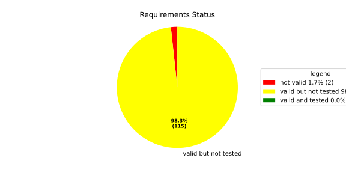
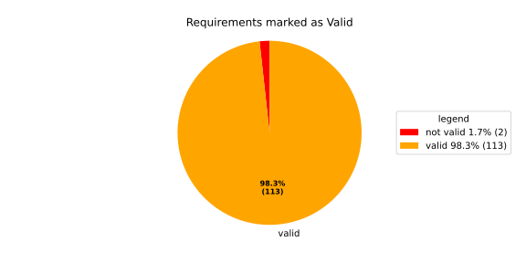
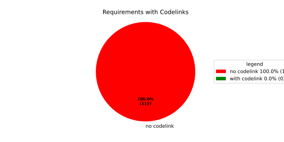

Component Requirements Statistics#
Overview#

In Detail#


No needs passed the filters
Failed Tests
Hint: This table should be empty. Before a PR can be merged all tests have to be successful.
No needs passed the filters
Skipped / Disabled Tests
No needs passed the filters
All passed Tests#
No needs passed the filters
Details About Testcases#
No needs passed the filters
No needs passed the filters
Test Log Files#
tests-report/src/launch_manager_daemon/health_monitor_lib/Notification_UT/test.log
exec ${PAGER:-/usr/bin/less} "$0" || exit 1
Executing tests from //src/launch_manager_daemon/health_monitor_lib:Notification_UT
-----------------------------------------------------------------------------
Running main() from gmock_main.cc
[==========] Running 5 tests from 2 test suites.
[----------] Global test environment set-up.
[----------] 4 tests from NotificationWithConfigTest
[ RUN ] NotificationWithConfigTest.CanGetNotificationName
mw::log initialization error: Error No logging configuration files could be found. occurred with context information: Failed to load configuration files. Fallback to console logging.
[ OK ] NotificationWithConfigTest.CanGetNotificationName (2 ms)
[ RUN ] NotificationWithConfigTest.SendsRequestAndNeverTimesOut
[ OK ] NotificationWithConfigTest.SendsRequestAndNeverTimesOut (0 ms)
[ RUN ] NotificationWithConfigTest.TimesOutWhenSendingRequestFails
2026/05/18 09:55:30.8130052 1952080 000 ECU1 NONE Rcvy log error verbose 2 Notification (TestNotification) Failed to enqueue recovery request (ring buffer full)
[ OK ] NotificationWithConfigTest.TimesOutWhenSendingRequestFails (0 ms)
[ RUN ] NotificationWithConfigTest.ProxyInitializationFails
2026/05/18 09:55:30.8130053 1952083 000 ECU1 NONE Rcvy log error verbose 3 Notification (TestNotification) Invalid ProcessGroupState identifier: InvalidIdentifier
[ OK ] NotificationWithConfigTest.ProxyInitializationFails (0 ms)
[----------] 4 tests from NotificationWithConfigTest (3 ms total)
[----------] 1 test from NotificationWithoutConfigTest
[ RUN ] NotificationWithoutConfigTest.WatchdogNotificationGoesDirectlyToTimeout
[ OK ] NotificationWithoutConfigTest.WatchdogNotificationGoesDirectlyToTimeout (0 ms)
[----------] 1 test from NotificationWithoutConfigTest (0 ms total)
[----------] Global test environment tear-down
[==========] 5 tests from 2 test suites ran. (4 ms total)
[ PASSED ] 5 tests.
tests-report/src/launch_manager_daemon/common/identifier_hash_UT/test.log
exec ${PAGER:-/usr/bin/less} "$0" || exit 1
Executing tests from //src/launch_manager_daemon/common:identifier_hash_UT
-----------------------------------------------------------------------------
Running main() from gmock_main.cc
[==========] Running 7 tests from 1 test suite.
[----------] Global test environment set-up.
[----------] 7 tests from IdentifierHashTest
[ RUN ] IdentifierHashTest.IdentifierHash_with_string_view_created
[ OK ] IdentifierHashTest.IdentifierHash_with_string_view_created (0 ms)
[ RUN ] IdentifierHashTest.IdentifierHash_with_string_created
[ OK ] IdentifierHashTest.IdentifierHash_with_string_created (0 ms)
[ RUN ] IdentifierHashTest.IdentifierHash_default_created
[ OK ] IdentifierHashTest.IdentifierHash_default_created (0 ms)
[ RUN ] IdentifierHashTest.IdentifierHash_invalid_hash_no_string_representation
[ OK ] IdentifierHashTest.IdentifierHash_invalid_hash_no_string_representation (0 ms)
[ RUN ] IdentifierHashTest.IdentifierHash_no_dangling_pointer_after_source_string_dies
[ OK ] IdentifierHashTest.IdentifierHash_no_dangling_pointer_after_source_string_dies (0 ms)
[ RUN ] IdentifierHashTest.IdentifierHash_EqualityOperators
[ OK ] IdentifierHashTest.IdentifierHash_EqualityOperators (0 ms)
[ RUN ] IdentifierHashTest.IdentifierHash_LessThanOperator
[ OK ] IdentifierHashTest.IdentifierHash_LessThanOperator (0 ms)
[----------] 7 tests from IdentifierHashTest (0 ms total)
[----------] Global test environment tear-down
[==========] 7 tests from 1 test suite ran. (0 ms total)
[ PASSED ] 7 tests.
tests-report/src/launch_manager_daemon/common/concurrency/mpmc_concurrent_queue_tsan_test/test.log
exec ${PAGER:-/usr/bin/less} "$0" || exit 1
Executing tests from //src/launch_manager_daemon/common/concurrency:mpmc_concurrent_queue_tsan_test
-----------------------------------------------------------------------------
Running main() from gmock_main.cc
[==========] Running 15 tests from 5 test suites.
[----------] Global test environment set-up.
[----------] 5 tests from MPMCConcurrentQueueTest_Basic
[ RUN ] MPMCConcurrentQueueTest_Basic.PushAndPopSingleItem
[ OK ] MPMCConcurrentQueueTest_Basic.PushAndPopSingleItem (0 ms)
[ RUN ] MPMCConcurrentQueueTest_Basic.PushAndPopPreservesOrder
[ OK ] MPMCConcurrentQueueTest_Basic.PushAndPopPreservesOrder (0 ms)
[ RUN ] MPMCConcurrentQueueTest_Basic.LvaluePushCopiesItem
[ OK ] MPMCConcurrentQueueTest_Basic.LvaluePushCopiesItem (0 ms)
[ RUN ] MPMCConcurrentQueueTest_Basic.RvaluePushWorksWithMoveOnlyType
[ OK ] MPMCConcurrentQueueTest_Basic.RvaluePushWorksWithMoveOnlyType (0 ms)
[ RUN ] MPMCConcurrentQueueTest_Basic.PopReturnsNulloptOnSemaphoreWaitFailure
[ OK ] MPMCConcurrentQueueTest_Basic.PopReturnsNulloptOnSemaphoreWaitFailure (22 ms)
[----------] 5 tests from MPMCConcurrentQueueTest_Basic (23 ms total)
[----------] 2 tests from MPMCConcurrentQueueTest_Timeout
[ RUN ] MPMCConcurrentQueueTest_Timeout.PushWithTimeoutSucceedsWhenSlotAvailable
[ OK ] MPMCConcurrentQueueTest_Timeout.PushWithTimeoutSucceedsWhenSlotAvailable (0 ms)
[ RUN ] MPMCConcurrentQueueTest_Timeout.PushWithTimeoutReturnsFalseWhenFull
[ OK ] MPMCConcurrentQueueTest_Timeout.PushWithTimeoutReturnsFalseWhenFull (21 ms)
[----------] 2 tests from MPMCConcurrentQueueTest_Timeout (22 ms total)
[----------] 3 tests from MPMCConcurrentQueueTest_Stop
[ RUN ] MPMCConcurrentQueueTest_Stop.PushReturnsFalseAfterStop
[ OK ] MPMCConcurrentQueueTest_Stop.PushReturnsFalseAfterStop (0 ms)
[ RUN ] MPMCConcurrentQueueTest_Stop.PopReturnsNulloptWhenStoppedAndEmpty
[ OK ] MPMCConcurrentQueueTest_Stop.PopReturnsNulloptWhenStoppedAndEmpty (0 ms)
[ RUN ] MPMCConcurrentQueueTest_Stop.ItemsAreDroppedAfterStop
[ OK ] MPMCConcurrentQueueTest_Stop.ItemsAreDroppedAfterStop (0 ms)
[----------] 3 tests from MPMCConcurrentQueueTest_Stop (0 ms total)
[----------] 4 tests from MPMCConcurrentQueueTest_Blocking
[ RUN ] MPMCConcurrentQueueTest_Blocking.PopBlocksUntilItemAvailable
[ OK ] MPMCConcurrentQueueTest_Blocking.PopBlocksUntilItemAvailable (0 ms)
[ RUN ] MPMCConcurrentQueueTest_Blocking.PushBlocksWhenFull
[ OK ] MPMCConcurrentQueueTest_Blocking.PushBlocksWhenFull (0 ms)
[ RUN ] MPMCConcurrentQueueTest_Blocking.StopUnblocksBlockedConsumer
[ OK ] MPMCConcurrentQueueTest_Blocking.StopUnblocksBlockedConsumer (0 ms)
[ RUN ] MPMCConcurrentQueueTest_Blocking.StopUnblocksBlockedProducer
[ OK ] MPMCConcurrentQueueTest_Blocking.StopUnblocksBlockedProducer (0 ms)
[----------] 4 tests from MPMCConcurrentQueueTest_Blocking (1 ms total)
[----------] 1 test from MPMCConcurrentQueueTest_MPMC
[ RUN ] MPMCConcurrentQueueTest_MPMC.AllItemsDelivered
[ OK ] MPMCConcurrentQueueTest_MPMC.AllItemsDelivered (6 ms)
[----------] 1 test from MPMCConcurrentQueueTest_MPMC (6 ms total)
[----------] Global test environment tear-down
[==========] 15 tests from 5 test suites ran. (55 ms total)
[ PASSED ] 15 tests.
tests-report/src/launch_manager_daemon/common/concurrency/mpmc_concurrent_queue_test/test.log
exec ${PAGER:-/usr/bin/less} "$0" || exit 1
Executing tests from //src/launch_manager_daemon/common/concurrency:mpmc_concurrent_queue_test
-----------------------------------------------------------------------------
Running main() from gmock_main.cc
[==========] Running 15 tests from 5 test suites.
[----------] Global test environment set-up.
[----------] 5 tests from MPMCConcurrentQueueTest_Basic
[ RUN ] MPMCConcurrentQueueTest_Basic.PushAndPopSingleItem
[ OK ] MPMCConcurrentQueueTest_Basic.PushAndPopSingleItem (0 ms)
[ RUN ] MPMCConcurrentQueueTest_Basic.PushAndPopPreservesOrder
[ OK ] MPMCConcurrentQueueTest_Basic.PushAndPopPreservesOrder (0 ms)
[ RUN ] MPMCConcurrentQueueTest_Basic.LvaluePushCopiesItem
[ OK ] MPMCConcurrentQueueTest_Basic.LvaluePushCopiesItem (0 ms)
[ RUN ] MPMCConcurrentQueueTest_Basic.RvaluePushWorksWithMoveOnlyType
[ OK ] MPMCConcurrentQueueTest_Basic.RvaluePushWorksWithMoveOnlyType (0 ms)
[ RUN ] MPMCConcurrentQueueTest_Basic.PopReturnsNulloptOnSemaphoreWaitFailure
[ OK ] MPMCConcurrentQueueTest_Basic.PopReturnsNulloptOnSemaphoreWaitFailure (23 ms)
[----------] 5 tests from MPMCConcurrentQueueTest_Basic (23 ms total)
[----------] 2 tests from MPMCConcurrentQueueTest_Timeout
[ RUN ] MPMCConcurrentQueueTest_Timeout.PushWithTimeoutSucceedsWhenSlotAvailable
[ OK ] MPMCConcurrentQueueTest_Timeout.PushWithTimeoutSucceedsWhenSlotAvailable (0 ms)
[ RUN ] MPMCConcurrentQueueTest_Timeout.PushWithTimeoutReturnsFalseWhenFull
[ OK ] MPMCConcurrentQueueTest_Timeout.PushWithTimeoutReturnsFalseWhenFull (21 ms)
[----------] 2 tests from MPMCConcurrentQueueTest_Timeout (21 ms total)
[----------] 3 tests from MPMCConcurrentQueueTest_Stop
[ RUN ] MPMCConcurrentQueueTest_Stop.PushReturnsFalseAfterStop
[ OK ] MPMCConcurrentQueueTest_Stop.PushReturnsFalseAfterStop (0 ms)
[ RUN ] MPMCConcurrentQueueTest_Stop.PopReturnsNulloptWhenStoppedAndEmpty
[ OK ] MPMCConcurrentQueueTest_Stop.PopReturnsNulloptWhenStoppedAndEmpty (0 ms)
[ RUN ] MPMCConcurrentQueueTest_Stop.ItemsAreDroppedAfterStop
[ OK ] MPMCConcurrentQueueTest_Stop.ItemsAreDroppedAfterStop (0 ms)
[----------] 3 tests from MPMCConcurrentQueueTest_Stop (0 ms total)
[----------] 4 tests from MPMCConcurrentQueueTest_Blocking
[ RUN ] MPMCConcurrentQueueTest_Blocking.PopBlocksUntilItemAvailable
[ OK ] MPMCConcurrentQueueTest_Blocking.PopBlocksUntilItemAvailable (0 ms)
[ RUN ] MPMCConcurrentQueueTest_Blocking.PushBlocksWhenFull
[ OK ] MPMCConcurrentQueueTest_Blocking.PushBlocksWhenFull (0 ms)
[ RUN ] MPMCConcurrentQueueTest_Blocking.StopUnblocksBlockedConsumer
[ OK ] MPMCConcurrentQueueTest_Blocking.StopUnblocksBlockedConsumer (0 ms)
[ RUN ] MPMCConcurrentQueueTest_Blocking.StopUnblocksBlockedProducer
[ OK ] MPMCConcurrentQueueTest_Blocking.StopUnblocksBlockedProducer (0 ms)
[----------] 4 tests from MPMCConcurrentQueueTest_Blocking (1 ms total)
[----------] 1 test from MPMCConcurrentQueueTest_MPMC
[ RUN ] MPMCConcurrentQueueTest_MPMC.AllItemsDelivered
[ OK ] MPMCConcurrentQueueTest_MPMC.AllItemsDelivered (4 ms)
[----------] 1 test from MPMCConcurrentQueueTest_MPMC (4 ms total)
[----------] Global test environment tear-down
[==========] 15 tests from 5 test suites ran. (51 ms total)
[ PASSED ] 15 tests.
tests-report/src/launch_manager_daemon/process_state_client_lib/processstateclient_UT/test.log
exec ${PAGER:-/usr/bin/less} "$0" || exit 1
Executing tests from //src/launch_manager_daemon/process_state_client_lib:processstateclient_UT
-----------------------------------------------------------------------------
Running main() from gmock_main.cc
[==========] Running 4 tests from 1 test suite.
[----------] Global test environment set-up.
[----------] 4 tests from ProcessStateClient_UT
[ RUN ] ProcessStateClient_UT.ProcessStateClient_ConstructReceiver_Succeeds
[ OK ] ProcessStateClient_UT.ProcessStateClient_ConstructReceiver_Succeeds (0 ms)
[ RUN ] ProcessStateClient_UT.ProcessStateClient_QueueOneProcess_Succeeds
[ OK ] ProcessStateClient_UT.ProcessStateClient_QueueOneProcess_Succeeds (0 ms)
[ RUN ] ProcessStateClient_UT.ProcessStateClient_QueueMaxNumberOfProcesses_Succeeds
[ OK ] ProcessStateClient_UT.ProcessStateClient_QueueMaxNumberOfProcesses_Succeeds (16 ms)
[ RUN ] ProcessStateClient_UT.ProcessStateClient_QueueOneProcessTooMany_Fails
mw::log initialization error: Error No logging configuration files could be found. occurred with context information: Failed to load configuration files. Fallback to console logging.
2026/05/27 09:22:30.3750349 3122518 000 ECU1 NONE LM log error verbose 1 Failed to queue posix process
2026/05/27 09:22:30.3750349 3122520 000 ECU1 NONE LM log error verbose 1 ProcessStateReceiver::getNextChangedPosixProcess: Overflow occurred, will be reported as kCommunicationError
[ OK ] ProcessStateClient_UT.ProcessStateClient_QueueOneProcessTooMany_Fails (5 ms)
[----------] 4 tests from ProcessStateClient_UT (22 ms total)
[----------] Global test environment tear-down
[==========] 4 tests from 1 test suite ran. (22 ms total)
[ PASSED ] 4 tests.
tests-report/src/launch_manager_daemon/recovery_client_lib/recovery_client_UT/test.log
exec ${PAGER:-/usr/bin/less} "$0" || exit 1
Executing tests from //src/launch_manager_daemon/recovery_client_lib:recovery_client_UT
-----------------------------------------------------------------------------
Running main() from gmock_main.cc
[==========] Running 5 tests from 1 test suite.
[----------] Global test environment set-up.
[----------] 5 tests from RecoveryClientTest
[ RUN ] RecoveryClientTest.SendSingleRequest
[ OK ] RecoveryClientTest.SendSingleRequest (0 ms)
[ RUN ] RecoveryClientTest.GetNextRequest
[ OK ] RecoveryClientTest.GetNextRequest (0 ms)
[ RUN ] RecoveryClientTest.GetNextRequestEmpty
[ OK ] RecoveryClientTest.GetNextRequestEmpty (0 ms)
[ RUN ] RecoveryClientTest.RingBufferFull
[ OK ] RecoveryClientTest.RingBufferFull (0 ms)
[ RUN ] RecoveryClientTest.FIFOOrdering
[ OK ] RecoveryClientTest.FIFOOrdering (0 ms)
[----------] 5 tests from RecoveryClientTest (0 ms total)
[----------] Global test environment tear-down
[==========] 5 tests from 1 test suite ran. (0 ms total)
[ PASSED ] 5 tests.
tests-report/src/health_monitoring_lib/tests/test.log
exec ${PAGER:-/usr/bin/less} "$0" || exit 1
Executing tests from //src/health_monitoring_lib:tests
-----------------------------------------------------------------------------
running 232 tests
test common::tests::time_offset_diff_too_large - should panic ... ok
test common::tests::duration_to_int_too_large - should panic ... ok
test common::tests::time_offset_valid ... ok
test common::tests::duration_to_int_valid ... ok
test common::tests::time_offset_wrong_order ... ok
test common::tests::time_range_from_interval_lower_too_large - should panic ... ok
test common::tests::time_range_from_interval_valid ... ok
test common::tests::time_range_new_valid ... ok
test common::tests::time_range_new_wrong_order - should panic ... ok
test deadline::common::tests::acquire_and_release_deadline ... ok
test deadline::common::tests::new_and_fields ... ok
test deadline::deadline_monitor::tests::deadline_outside_time_range_is_error_when_dropped_after_evaluate ... ok
test deadline::deadline_monitor::tests::get_deadline_unknown_tag ... ok
test deadline::deadline_monitor::tests::deadline_failed_on_first_run_and_then_restarted_is_evaluated_as_error ... ok
test deadline::deadline_monitor::tests::start_stop_deadline_outside_ranges_is_error_when_dropped_before_evaluate ... ok
test deadline::common::tests::concurrent_acquire ... ok
test deadline::deadline_monitor::tests::start_stop_deadline_outside_ranges_is_evaluated_as_error ... ok
test deadline::deadline_state::tests::as_u64_and_new ... ok
test deadline::deadline_state::tests::deadline_state_default_and_snapshot ... ok
test deadline::deadline_state::tests::deadline_state_update_none_returns_err ... ok
test deadline::deadline_state::tests::deadline_state_update_success ... ok
test deadline::deadline_state::tests::default_state ... ok
test deadline::deadline_state::tests::set_and_get_timestamp_ms ... ok
test deadline::deadline_state::tests::set_running ... ok
test deadline::deadline_state::tests::set_underrun ... ok
test deadline::ffi::tests::deadline_destroy_null_deadline ... ok
test deadline::ffi::tests::deadline_monitor_builder_add_deadline_invalid_range ... ok
test deadline::ffi::tests::deadline_monitor_builder_add_deadline_null_builder ... ok
test deadline::ffi::tests::deadline_monitor_builder_add_deadline_null_deadline_tag ... ok
test deadline::ffi::tests::deadline_monitor_builder_add_deadline_succeeds ... ok
test deadline::ffi::tests::deadline_monitor_builder_create_null_builder ... ok
test deadline::ffi::tests::deadline_monitor_builder_create_succeeds ... ok
test deadline::ffi::tests::deadline_monitor_builder_destroy_null_builder ... ok
test deadline::ffi::tests::deadline_monitor_destroy_null_monitor ... ok
test deadline::ffi::tests::deadline_monitor_get_deadline_null_deadline_handle ... ok
test deadline::ffi::tests::deadline_monitor_get_deadline_null_deadline_tag ... ok
test deadline::ffi::tests::deadline_monitor_get_deadline_null_monitor ... ok
test deadline::ffi::tests::deadline_monitor_get_deadline_succeeds ... ok
test deadline::ffi::tests::deadline_monitor_get_deadline_unknown_deadline ... ok
test deadline::ffi::tests::deadline_start_already_started ... ok
test deadline::ffi::tests::deadline_start_null_deadline ... ok
test deadline::ffi::tests::deadline_start_succeeds ... ok
test deadline::ffi::tests::deadline_stop_null_deadline ... ok
test deadline::ffi::tests::deadline_stop_succeeds ... ok
test ffi::tests::health_monitor_builder_add_deadline_monitor_null_deadline_monitor_builder ... ok
test ffi::tests::health_monitor_builder_add_deadline_monitor_null_hmon_builder ... ok
test ffi::tests::health_monitor_builder_add_deadline_monitor_null_monitor_tag ... ok
test ffi::tests::health_monitor_builder_add_deadline_monitor_succeeds ... ok
test ffi::tests::health_monitor_builder_add_heartbeat_monitor_null_heartbeat_monitor_builder ... ok
test ffi::tests::health_monitor_builder_add_heartbeat_monitor_null_hmon_builder ... ok
test ffi::tests::health_monitor_builder_add_heartbeat_monitor_null_monitor_tag ... ok
test ffi::tests::health_monitor_builder_add_heartbeat_monitor_succeeds ... ok
test ffi::tests::health_monitor_builder_add_logic_monitor_null_hmon_builder ... ok
test ffi::tests::health_monitor_builder_add_logic_monitor_null_logic_monitor_builder ... ok
test ffi::tests::health_monitor_builder_add_logic_monitor_null_monitor_tag ... ok
test ffi::tests::health_monitor_builder_add_logic_monitor_succeeds ... ok
test ffi::tests::health_monitor_builder_build_invalid_cycle_intervals ... ok
test ffi::tests::health_monitor_builder_build_no_monitors ... ok
test ffi::tests::health_monitor_builder_build_null_builder_handle ... ok
test ffi::tests::health_monitor_builder_build_null_monitor_handle ... ok
test ffi::tests::health_monitor_builder_build_succeeds ... ok
test ffi::tests::health_monitor_builder_build_thread_parameters ... ok
test ffi::tests::health_monitor_builder_build_valid_cycle_intervals_succeeds ... ok
test ffi::tests::health_monitor_builder_create_null_handle ... ok
test ffi::tests::health_monitor_builder_create_succeeds ... ok
test ffi::tests::health_monitor_builder_destroy_null_handle ... ok
test ffi::tests::health_monitor_destroy_null_hmon ... ok
test ffi::tests::health_monitor_get_deadline_monitor_already_taken ... ok
test ffi::tests::health_monitor_get_deadline_monitor_null_deadline_monitor ... ok
test ffi::tests::health_monitor_get_deadline_monitor_null_monitor_tag ... ok
test ffi::tests::health_monitor_get_deadline_monitor_null_hmon ... ok
test ffi::tests::health_monitor_get_deadline_monitor_succeeds ... ok
test ffi::tests::health_monitor_get_heartbeat_monitor_already_taken ... ok
test ffi::tests::health_monitor_get_heartbeat_monitor_null_heartbeat_monitor ... ok
test ffi::tests::health_monitor_get_heartbeat_monitor_null_hmon ... ok
test ffi::tests::health_monitor_get_heartbeat_monitor_null_monitor_tag ... ok
test ffi::tests::health_monitor_get_heartbeat_monitor_succeeds ... ok
test ffi::tests::health_monitor_get_logic_monitor_already_taken ... ok
test ffi::tests::health_monitor_get_logic_monitor_null_hmon ... ok
test ffi::tests::health_monitor_get_logic_monitor_null_logic_monitor ... ok
test ffi::tests::health_monitor_get_logic_monitor_null_monitor_tag ... ok
test ffi::tests::health_monitor_get_logic_monitor_succeeds ... ok
test ffi::tests::health_monitor_start_monitor_not_taken ... ok
test ffi::tests::health_monitor_start_null_hmon ... ok
[2026/04/28 06:24:01.7923605][9537][HMON][INFO] Monitoring thread started.
[2026/04/28 06:24:01.7923735][9537][HMON][INFO] Monitoring thread exiting.
test health_monitor::tests::health_monitor_builder_build_invalid_cycles ... ok
test ffi::tests::health_monitor_start_succeeds ... ok
test health_monitor::tests::health_monitor_builder_build_no_monitors ... ok
test health_monitor::tests::health_monitor_builder_build_succeeds ... ok
test health_monitor::tests::health_monitor_builder_new_succeeds ... ok
test health_monitor::tests::health_monitor_get_deadline_monitor_available ... ok
test health_monitor::tests::health_monitor_get_deadline_monitor_invalid_state ... ok
test health_monitor::tests::health_monitor_get_deadline_monitor_taken ... ok
test health_monitor::tests::health_monitor_get_heartbeat_monitor_available ... ok
test health_monitor::tests::health_monitor_get_deadline_monitor_unknown ... ok
test health_monitor::tests::health_monitor_get_heartbeat_monitor_invalid_state ... ok
test health_monitor::tests::health_monitor_get_heartbeat_monitor_taken ... ok
test health_monitor::tests::health_monitor_get_heartbeat_monitor_unknown ... ok
test health_monitor::tests::health_monitor_get_logic_monitor_invalid_state ... ok
test health_monitor::tests::health_monitor_get_logic_monitor_available ... ok
test health_monitor::tests::health_monitor_get_logic_monitor_taken ... ok
test health_monitor::tests::health_monitor_get_logic_monitor_unknown ... ok
test health_monitor::tests::health_monitor_start_monitors_not_taken - should panic ... ok
[2026/04/28 06:24:01.7938501][9537][HMON][INFO] Monitoring thread started.
test heartbeat::ffi::tests::heartbeat_monitor_builder_create_invalid_range ... ok
[2026/04/28 06:24:01.7939423][9537][HMON][INFO] Monitoring thread exiting.
test heartbeat::ffi::tests::heartbeat_monitor_builder_create_null_builder ... ok
test health_monitor::tests::health_monitor_start_succeeds ... ok
test heartbeat::ffi::tests::heartbeat_monitor_builder_create_succeeds ... ok
test heartbeat::ffi::tests::heartbeat_monitor_builder_destroy_null_builder ... ok
test heartbeat::ffi::tests::heartbeat_monitor_heartbeat_null_monitor ... ok
test heartbeat::ffi::tests::heartbeat_monitor_destroy_null_monitor ... ok
test heartbeat::ffi::tests::heartbeat_monitor_heartbeat_succeeds ... ok
test deadline::deadline_monitor::tests::monitor_with_multiple_running_deadlines ... ok
test heartbeat::heartbeat_monitor::tests::heartbeat_monitor_beat_early_evaluate_early ... ok
test heartbeat::heartbeat_monitor::tests::heartbeat_monitor_beat_early_evaluate_in_range ... ok
test heartbeat::heartbeat_monitor::tests::heartbeat_monitor_beat_in_range_evaluate_in_range ... ok
test heartbeat::heartbeat_monitor::tests::heartbeat_monitor_beat_early_evaluate_late ... ok
test heartbeat::heartbeat_monitor::tests::heartbeat_monitor_builder_build_invalid_internal_processing_cycle ... ok
test heartbeat::heartbeat_monitor::tests::heartbeat_monitor_builder_build_ok ... ok
test heartbeat::heartbeat_monitor::tests::heartbeat_monitor_beat_in_range_evaluate_late ... ok
test heartbeat::heartbeat_monitor::tests::heartbeat_monitor_beat_late_evaluate_late ... ok
test heartbeat::heartbeat_monitor::tests::heartbeat_monitor_cycle_early ... ok
test heartbeat::heartbeat_monitor::tests::heartbeat_monitor_multiple_beats_early_evaluate_early ... ok
test heartbeat::heartbeat_monitor::tests::heartbeat_monitor_cycle_in_range ... ok
test heartbeat::heartbeat_monitor::tests::heartbeat_monitor_multiple_beats_early_evaluate_in_range ... ok
test heartbeat::heartbeat_monitor::tests::heartbeat_monitor_cycle_late ... ok
test heartbeat::heartbeat_monitor::tests::heartbeat_monitor_multiple_beats_early_evaluate_late ... ok
test heartbeat::heartbeat_monitor::tests::heartbeat_monitor_multiple_beats_in_range_evaluate_in_range ... ok
test heartbeat::heartbeat_monitor::tests::heartbeat_monitor_no_beat_evaluate_early ... ok
test heartbeat::heartbeat_monitor::tests::heartbeat_monitor_no_beat_evaluate_in_range ... ok
test heartbeat::heartbeat_monitor::tests::heartbeat_monitor_multiple_beats_in_range_evaluate_late ... ok
test heartbeat::heartbeat_monitor::tests::heartbeat_monitor_multiple_beats_late_evaluate_late ... ok
test heartbeat::heartbeat_state::tests::snapshot_counter_increment ... ok
test heartbeat::heartbeat_state::tests::snapshot_default ... ok
test heartbeat::heartbeat_state::tests::snapshot_from_u64_max ... ok
test heartbeat::heartbeat_state::tests::snapshot_from_u64_valid ... ok
test heartbeat::heartbeat_state::tests::snapshot_from_u64_zero ... ok
test heartbeat::heartbeat_state::tests::snapshot_new_succeeds ... ok
test heartbeat::heartbeat_state::tests::snapshot_set_heartbeat_timestamp_out_of_range - should panic ... ok
test heartbeat::heartbeat_state::tests::snapshot_set_heartbeat_timestamp_valid ... ok
test heartbeat::heartbeat_state::tests::state_default ... ok
test heartbeat::heartbeat_state::tests::state_new ... ok
test heartbeat::heartbeat_state::tests::state_reset ... ok
test heartbeat::heartbeat_state::tests::state_snapshot ... ok
test heartbeat::heartbeat_state::tests::state_update_none ... ok
test heartbeat::heartbeat_state::tests::state_update_some ... ok
test logic::ffi::tests::logic_monitor_builder_add_state_null_allowed_states_many_elements ... ok
test logic::ffi::tests::logic_monitor_builder_add_state_null_allowed_states_zero_elements ... ok
test logic::ffi::tests::logic_monitor_builder_add_state_null_builder ... ok
test logic::ffi::tests::logic_monitor_builder_add_state_null_tag ... ok
test logic::ffi::tests::logic_monitor_builder_add_state_succeeds ... ok
test logic::ffi::tests::logic_monitor_builder_create_null_builder ... ok
test logic::ffi::tests::logic_monitor_builder_create_null_initial_state ... ok
test logic::ffi::tests::logic_monitor_builder_create_succeeds ... ok
test logic::ffi::tests::logic_monitor_builder_destroy_null_builder ... ok
test logic::ffi::tests::logic_monitor_destroy_null_monitor ... ok
test logic::ffi::tests::logic_monitor_state_fails ... ok
test logic::ffi::tests::logic_monitor_state_null_monitor ... ok
test logic::ffi::tests::logic_monitor_state_null_state ... ok
test logic::ffi::tests::logic_monitor_state_succeeds ... ok
test logic::ffi::tests::logic_monitor_transition_fails ... ok
test logic::ffi::tests::logic_monitor_transition_null_monitor ... ok
test logic::ffi::tests::logic_monitor_transition_null_target_state ... ok
test logic::ffi::tests::logic_monitor_transition_succeeds ... ok
test logic::logic_monitor::tests::logic_monitor_builder_build_no_states ... ok
test logic::logic_monitor::tests::logic_monitor_builder_build_succeeds ... ok
test logic::logic_monitor::tests::logic_monitor_builder_build_undefined_initial_state ... ok
test logic::logic_monitor::tests::logic_monitor_builder_build_undefined_target ... ok
test logic::logic_monitor::tests::logic_monitor_builder_new_succeeds ... ok
test logic::logic_monitor::tests::logic_monitor_evaluate_invalid_state ... ok
test logic::logic_monitor::tests::logic_monitor_evaluate_invalid_transition ... ok
test logic::logic_monitor::tests::logic_monitor_evaluate_succeeds ... ok
test logic::logic_monitor::tests::logic_monitor_state_indeterminate_current_state ... ok
test logic::logic_monitor::tests::logic_monitor_state_succeeds ... ok
test logic::logic_monitor::tests::logic_monitor_transition_indeterminate_current_state ... ok
test logic::logic_monitor::tests::logic_monitor_transition_invalid_transition ... ok
test logic::logic_monitor::tests::logic_monitor_transition_succeeds ... ok
test logic::logic_monitor::tests::logic_monitor_transition_unknown_node ... ok
test logic::logic_state::tests::snapshot_from_u64_max ... ok
test logic::logic_state::tests::snapshot_from_u64_valid ... ok
test logic::logic_state::tests::snapshot_from_u64_zero ... ok
test logic::logic_state::tests::snapshot_new_succeeds ... ok
test logic::logic_state::tests::snapshot_set_current_state_index_valid ... ok
test logic::logic_state::tests::snapshot_set_heartbeat_timestamp_out_of_range - should panic ... ok
test logic::logic_state::tests::snapshot_set_monitor_status_valid ... ok
test logic::logic_state::tests::state_new ... ok
test logic::logic_state::tests::state_snapshot ... ok
test logic::logic_state::tests::state_swap ... ok
test tag::tests::deadline_tag_debug ... ok
test tag::tests::deadline_tag_from_str ... ok
test tag::tests::deadline_tag_from_string ... ok
test tag::tests::deadline_tag_new ... ok
test tag::tests::deadline_tag_score_debug ... ok
test tag::tests::monitor_tag_debug ... ok
test tag::tests::monitor_tag_from_str ... ok
test tag::tests::monitor_tag_from_string ... ok
test tag::tests::monitor_tag_new ... ok
test tag::tests::monitor_tag_score_debug ... ok
test tag::tests::state_tag_debug ... ok
test tag::tests::state_tag_from_str ... ok
test tag::tests::state_tag_from_string ... ok
test tag::tests::state_tag_new ... ok
test tag::tests::state_tag_score_debug ... ok
test tag::tests::tag_debug ... ok
test tag::tests::tag_hash_is_eq ... ok
test tag::tests::tag_hash_is_ne ... ok
test tag::tests::tag_new ... ok
test tag::tests::tag_partial_eq_is_eq ... ok
test tag::tests::tag_partial_eq_is_ne ... ok
test tag::tests::tag_score_debug ... ok
test tag::tests::test_from_str ... ok
test tag::tests::test_from_string ... ok
test thread_ffi::tests::scheduler_policy_priority_max_null_priority ... ok
test thread_ffi::tests::scheduler_policy_priority_max_succeeds ... ok
test thread_ffi::tests::scheduler_policy_priority_min_null_priority ... ok
test thread_ffi::tests::scheduler_policy_priority_min_succeeds ... ok
test thread_ffi::tests::thread_parameters_affinity_null_affinity_many_elements ... ok
test thread_ffi::tests::thread_parameters_affinity_null_affinity_zero_elements ... ok
test thread_ffi::tests::thread_parameters_affinity_null_handle ... ok
test thread_ffi::tests::thread_parameters_affinity_succeeds ... ok
test thread_ffi::tests::thread_parameters_create_succeeds ... ok
test thread_ffi::tests::thread_parameters_destroy_null_handle ... ok
test thread_ffi::tests::thread_parameters_scheduler_parameters_invalid_priority ... ok
test thread_ffi::tests::thread_parameters_scheduler_parameters_null_handle ... ok
test thread_ffi::tests::thread_parameters_scheduler_parameters_succeeds ... ok
test thread_ffi::tests::thread_parameters_stack_size_null_handle ... ok
test thread_ffi::tests::thread_parameters_stack_size_succeeds ... ok
test worker::tests::monitoring_logic_report_alive_on_each_call_when_no_error ... ok
test heartbeat::heartbeat_monitor::tests::heartbeat_monitor_no_beat_evaluate_late ... ok
test worker::tests::monitoring_logic_report_error_when_deadline_failed ... ok
[2026/04/28 06:24:02.7527556][9537][HMON][INFO] Monitoring thread started.
test deadline::deadline_monitor::tests::start_stop_deadline_within_range_works ... ok
[2026/04/28 06:24:02.8131427][9537][HMON][WARN] Deadline (DeadlineTag(deadline_fast)) missed! Expected: 50, now: 60
[2026/04/28 06:24:02.8131727][9537][HMON][WARN] Deadline monitor with tag MonitorTag(deadline_monitor) reported error: TooLate.
[2026/04/28 06:24:02.8131797][9537][HMON][WARN] One or more monitors reported errors, skipping AliveAPI notification.
[2026/04/28 06:24:02.8131845][9537][HMON][INFO] Monitoring logic failed, stopping thread.
[2026/04/28 06:24:02.8131888][9537][HMON][INFO] Monitoring thread exiting.
test worker::tests::monitoring_logic_report_alive_respect_cycle ... ok
test worker::tests::unique_thread_runner_monitoring_works ... ok
test heartbeat::heartbeat_monitor::tests::heartbeat_monitor_timestamp_offset ... ok
test result: ok. 232 passed; 0 failed; 0 ignored; 0 measured; 0 filtered out; finished in 1.25s
tests-report/src/health_monitoring_lib/cpp_tests/test.log
exec ${PAGER:-/usr/bin/less} "$0" || exit 1
Executing tests from //src/health_monitoring_lib:cpp_tests
-----------------------------------------------------------------------------
Running main() from gmock_main.cc
[==========] Running 1 test from 1 test suite.
[----------] Global test environment set-up.
[----------] 1 test from HealthMonitorTest
[ RUN ] HealthMonitorTest.TestName
[2026/04/28 06:24:01.1786942][src/health_monitoring_lib/rust/deadline/deadline_monitor.rs:217][9511][HMON][ERROR] Deadline DeadlineTag(deadline_1) stopped too early by 100 ms
[2026/04/28 06:24:01.1830849][src/health_monitoring_lib/rust/worker.rs:121][9511][HMON][INFO] Monitoring thread started.
[2026/04/28 06:24:01.1831156][src/health_monitoring_lib/rust/worker.rs:139][9511][HMON][INFO] Monitoring thread exiting.
[ OK ] HealthMonitorTest.TestName (6 ms)
[----------] 1 test from HealthMonitorTest (6 ms total)
[----------] Global test environment tear-down
[==========] 1 test from 1 test suite ran. (7 ms total)
[ PASSED ] 1 test.
tests-report/src/health_monitoring_lib/loom_tests/test.log
exec ${PAGER:-/usr/bin/less} "$0" || exit 1
Executing tests from //src/health_monitoring_lib:loom_tests
-----------------------------------------------------------------------------
running 3 tests
test heartbeat::heartbeat_monitor::loom_tests::heartbeat_monitor_heartbeat_evaluate_too_early ... ok
test heartbeat::heartbeat_monitor::loom_tests::heartbeat_monitor_heartbeat_evaluate_in_range ... ok
test heartbeat::heartbeat_monitor::loom_tests::heartbeat_monitor_heartbeat_evaluate_too_late ... ok
test result: ok. 3 passed; 0 failed; 0 ignored; 0 measured; 0 filtered out; finished in 0.70s
tests-report/tests/integration/smoke/smoke/test.log
exec ${PAGER:-/usr/bin/less} "$0" || exit 1
Executing tests from //tests/integration/smoke:smoke
-----------------------------------------------------------------------------
============================= test session starts ==============================
platform linux -- Python 3.12.12, pytest-9.0.3, pluggy-1.5.0
rootdir: /home/runner/.bazel/sandbox/processwrapper-sandbox/869/execroot/_main/bazel-out/k8-fastbuild/bin/tests/integration/smoke/smoke.runfiles/score_itf+
configfile: pytest.ini
collected 1 item
../score_itf+::test_smoke
-------------------------------- live log setup --------------------------------
[2026-05-27 09:22:46.054] [INFO] [score.itf.plugins.docker] Executing custom image bootstrap command: tests/utils/environments/x86_64-linux/x86_64-linux.sh
[2026-05-27 09:22:46.223] [DEBUG] [docker.utils.config] Trying paths: ['/home/runner/.docker/config.json', '/home/runner/.dockercfg']
[2026-05-27 09:22:46.223] [DEBUG] [docker.utils.config] Found file at path: /home/runner/.docker/config.json
[2026-05-27 09:22:46.223] [DEBUG] [docker.auth] Found 'auths' section
[2026-05-27 09:22:46.224] [DEBUG] [docker.auth] Found entry (registry='https://index.docker.io/v1/', username='githubactions')
[2026-05-27 09:22:46.235] [DEBUG] [urllib3.connectionpool] http://localhost:None "GET /version HTTP/1.1" 200 823
[2026-05-27 09:22:46.263] [DEBUG] [urllib3.connectionpool] http://localhost:None "POST /v1.48/containers/create HTTP/1.1" 201 88
[2026-05-27 09:22:46.265] [DEBUG] [urllib3.connectionpool] http://localhost:None "GET /v1.48/containers/2071487d1217c5ecde76bc6a5188d2c35b991eeb90585cc7e4d8f0c5d2fb0889/json HTTP/1.1" 200 None
[2026-05-27 09:22:46.414] [DEBUG] [urllib3.connectionpool] http://localhost:None "POST /v1.48/containers/2071487d1217c5ecde76bc6a5188d2c35b991eeb90585cc7e4d8f0c5d2fb0889/start HTTP/1.1" 204 0
[2026-05-27 09:22:46.415] [DEBUG] [docker.utils.config] Trying paths: ['/home/runner/.docker/config.json', '/home/runner/.dockercfg']
[2026-05-27 09:22:46.415] [DEBUG] [docker.utils.config] Found file at path: /home/runner/.docker/config.json
[2026-05-27 09:22:46.415] [DEBUG] [docker.auth] Found 'auths' section
[2026-05-27 09:22:46.415] [DEBUG] [docker.auth] Found entry (registry='https://index.docker.io/v1/', username='githubactions')
[2026-05-27 09:22:46.429] [DEBUG] [urllib3.connectionpool] http://localhost:None "GET /version HTTP/1.1" 200 823
[2026-05-27 09:22:46.432] [DEBUG] [urllib3.connectionpool] http://localhost:None "POST /v1.48/containers/2071487d1217c5ecde76bc6a5188d2c35b991eeb90585cc7e4d8f0c5d2fb0889/exec HTTP/1.1" 201 74
[2026-05-27 09:22:46.437] [DEBUG] [urllib3.connectionpool] http://localhost:None "POST /v1.48/exec/a8b9391c0c6e239af9826b14db1eb557d597033b4bf4b71e4db2623b73f18779/start HTTP/1.1" 101 0
[2026-05-27 09:22:46.502] [DEBUG] [urllib3.connectionpool] http://localhost:None "GET /v1.48/exec/a8b9391c0c6e239af9826b14db1eb557d597033b4bf4b71e4db2623b73f18779/json HTTP/1.1" 200 390
[2026-05-27 09:22:46.543] [DEBUG] [urllib3.connectionpool] http://localhost:None "PUT /v1.48/containers/2071487d1217c5ecde76bc6a5188d2c35b991eeb90585cc7e4d8f0c5d2fb0889/archive?path=%2Ftmp HTTP/1.1" 200 0
[2026-05-27 09:22:46.545] [DEBUG] [urllib3.connectionpool] http://localhost:None "POST /v1.48/containers/2071487d1217c5ecde76bc6a5188d2c35b991eeb90585cc7e4d8f0c5d2fb0889/exec HTTP/1.1" 201 74
[2026-05-27 09:22:46.546] [DEBUG] [urllib3.connectionpool] http://localhost:None "POST /v1.48/exec/dd8cfea0e3b6203844b333dd6d809dccf7a6b1e79cf14cbdfcbf6a47edab2351/start HTTP/1.1" 101 0
[2026-05-27 09:22:46.638] [DEBUG] [urllib3.connectionpool] http://localhost:None "GET /v1.48/exec/dd8cfea0e3b6203844b333dd6d809dccf7a6b1e79cf14cbdfcbf6a47edab2351/json HTTP/1.1" 200 416
[2026-05-27 09:22:46.638] [INFO] [tests.utils.testing_utils.setup_test] Test case setup finished
-------------------------------- live log call ---------------------------------
[2026-05-27 09:22:46.641] [DEBUG] [urllib3.connectionpool] http://localhost:None "POST /v1.48/containers/2071487d1217c5ecde76bc6a5188d2c35b991eeb90585cc7e4d8f0c5d2fb0889/exec HTTP/1.1" 201 74
[2026-05-27 09:22:46.643] [DEBUG] [urllib3.connectionpool] http://localhost:None "POST /v1.48/exec/11336b3ecda50acdc8eeaa0e8b88ae04746d52bf53e561e35adc7d4fa4bfb442/start HTTP/1.1" 101 0
[2026-05-27 09:22:46.687] [DEBUG] [urllib3.connectionpool] http://localhost:None "GET /v1.48/exec/11336b3ecda50acdc8eeaa0e8b88ae04746d52bf53e561e35adc7d4fa4bfb442/json HTTP/1.1" 200 404
[2026-05-27 09:22:46.689] [DEBUG] [urllib3.connectionpool] http://localhost:None "POST /v1.48/containers/2071487d1217c5ecde76bc6a5188d2c35b991eeb90585cc7e4d8f0c5d2fb0889/exec HTTP/1.1" 201 74
[2026-05-27 09:22:46.693] [DEBUG] [urllib3.connectionpool] http://localhost:None "POST /v1.48/exec/9021001a1b3f678ab0506f9127f07136c7020a9a144d7370fecd156843ef9bab/start HTTP/1.1" 101 0
[2026-05-27 09:22:46.745] [INFO] [launch_manager] mw::log
[2026-05-27 09:22:46.746] [INFO] [launch_manager] initialization error:
[2026-05-27 09:22:46.747] [DEBUG] [urllib3.connectionpool] http://localhost:None "GET /v1.48/exec/9021001a1b3f678ab0506f9127f07136c7020a9a144d7370fecd156843ef9bab/json HTTP/1.1" 200 442
[2026-05-27 09:22:46.747] [INFO] [launch_manager] Error
[2026-05-27 09:22:46.747] [INFO] [launch_manager] No logging configuration files could be found.
[2026-05-27 09:22:46.748] [INFO] [launch_manager] occurred
[2026-05-27 09:22:46.748] [INFO] [launch_manager] with context information:
[2026-05-27 09:22:46.748] [DEBUG] [urllib3.connectionpool] http://localhost:None "POST /v1.48/containers/2071487d1217c5ecde76bc6a5188d2c35b991eeb90585cc7e4d8f0c5d2fb0889/exec HTTP/1.1" 201 74
[2026-05-27 09:22:46.748] [INFO] [launch_manager] Failed to load configuration files. Fallback to console logging.
[2026-05-27 09:22:46.749] [INFO] [launch_manager] 2026/05/27 09:22:46.3766745 3286478 000 ECU1 NONE Fcty log warn verbose 2 Factory for FlatCfg MachineConfig: No watchdog configured
[2026-05-27 09:22:46.749] [INFO] [launch_manager] [==========] Running 1 test from 1 test suite.
[2026-05-27 09:22:46.750] [DEBUG] [urllib3.connectionpool] http://localhost:None "POST /v1.48/exec/0b860aadc49498f09546c6daa1d828638ae9fd0819da7d1e1821d5fb585499a0/start HTTP/1.1" 101 0
[2026-05-27 09:22:46.750] [INFO] [launch_manager] [----------] Global test environment set-up.
[2026-05-27 09:22:46.750] [INFO] [launch_manager] [----------] 1 test from Smoke
[2026-05-27 09:22:46.751] [INFO] [launch_manager] [ RUN ] Smoke.Daemon
[2026-05-27 09:22:46.751] [INFO] [launch_manager] [ STEP ] Control daemon report kRunning
[2026-05-27 09:22:46.751] [INFO] [launch_manager] [ END STEP ] Control daemon report kRunning
[2026-05-27 09:22:46.787] [DEBUG] [urllib3.connectionpool] http://localhost:None "GET /v1.48/exec/0b860aadc49498f09546c6daa1d828638ae9fd0819da7d1e1821d5fb585499a0/json HTTP/1.1" 200 404
[2026-05-27 09:22:46.788] [DEBUG] [tests.utils.testing_utils.run_until_file_deployed] Waiting for /tmp/tests/test_end
[2026-05-27 09:22:47.289] [DEBUG] [urllib3.connectionpool] http://localhost:None "GET /v1.48/exec/9021001a1b3f678ab0506f9127f07136c7020a9a144d7370fecd156843ef9bab/json HTTP/1.1" 200 442
[2026-05-27 09:22:47.290] [DEBUG] [urllib3.connectionpool] http://localhost:None "POST /v1.48/containers/2071487d1217c5ecde76bc6a5188d2c35b991eeb90585cc7e4d8f0c5d2fb0889/exec HTTP/1.1" 201 74
[2026-05-27 09:22:47.291] [DEBUG] [urllib3.connectionpool] http://localhost:None "POST /v1.48/exec/f60e5efe5ae291c9f314b6b8ee394dec8e244e70b0ea51aeb1e23706fac08172/start HTTP/1.1" 101 0
[2026-05-27 09:22:47.328] [DEBUG] [urllib3.connectionpool] http://localhost:None "GET /v1.48/exec/f60e5efe5ae291c9f314b6b8ee394dec8e244e70b0ea51aeb1e23706fac08172/json HTTP/1.1" 200 404
[2026-05-27 09:22:47.329] [DEBUG] [tests.utils.testing_utils.run_until_file_deployed] Waiting for /tmp/tests/test_end
[2026-05-27 09:22:47.752] [INFO] [launch_manager] [ STEP ] Activate RunTarget Running
[2026-05-27 09:22:47.753] [INFO] [launch_manager] mw::log initialization error: Error No logging configuration files could be found. occurred with context information: Failed to load configuration files. Fallback to console logging.
[2026-05-27 09:22:47.755] [INFO] [launch_manager] [==========] Running 1 test from 1 test suite.
[2026-05-27 09:22:47.755] [INFO] [launch_manager] [----------] Global test environment set-up.
[2026-05-27 09:22:47.756] [INFO] [launch_manager] [----------] 1 test from Smoke
[2026-05-27 09:22:47.756] [INFO] [launch_manager] [ RUN ] Smoke.Process
[2026-05-27 09:22:47.757] [INFO] [launch_manager] [ OK ] Smoke.Process (2 ms)
[2026-05-27 09:22:47.758] [INFO] [launch_manager] [----------] 1 test from Smoke (2 ms total)
[2026-05-27 09:22:47.758] [INFO] [launch_manager] [----------] Global test environment tear-down
[2026-05-27 09:22:47.759] [INFO] [launch_manager] [==========] 1 test from 1 test suite ran. (2 ms total)
[2026-05-27 09:22:47.759] [INFO] [launch_manager] [ PASSED ] 1 test.
[2026-05-27 09:22:47.830] [DEBUG] [urllib3.connectionpool] http://localhost:None "GET /v1.48/exec/9021001a1b3f678ab0506f9127f07136c7020a9a144d7370fecd156843ef9bab/json HTTP/1.1" 200 442
[2026-05-27 09:22:47.831] [DEBUG] [urllib3.connectionpool] http://localhost:None "POST /v1.48/containers/2071487d1217c5ecde76bc6a5188d2c35b991eeb90585cc7e4d8f0c5d2fb0889/exec HTTP/1.1" 201 74
[2026-05-27 09:22:47.832] [DEBUG] [urllib3.connectionpool] http://localhost:None "POST /v1.48/exec/a6392e3c6581536150266a16bb40bebc083e382534020f20c368b4d49e1f95a8/start HTTP/1.1" 101 0
[2026-05-27 09:22:47.850] [INFO] [launch_manager] [ END STEP ] Activate RunTarget Running
[2026-05-27 09:22:47.850] [INFO] [launch_manager] [ STEP ] Activate RunTarget Startup
[2026-05-27 09:22:47.877] [DEBUG] [urllib3.connectionpool] http://localhost:None "GET /v1.48/exec/a6392e3c6581536150266a16bb40bebc083e382534020f20c368b4d49e1f95a8/json HTTP/1.1" 200 404
[2026-05-27 09:22:47.877] [DEBUG] [tests.utils.testing_utils.run_until_file_deployed] Waiting for /tmp/tests/test_end
[2026-05-27 09:22:47.950] [INFO] [launch_manager] [ END STEP ] Activate RunTarget Startup
[2026-05-27 09:22:47.950] [INFO] [launch_manager] [ STEP ] Activate RunTarget Off
[2026-05-27 09:22:47.952] [INFO] [launch_manager] [ END STEP ] Activate RunTarget Off
[2026-05-27 09:22:48.051] [INFO] [launch_manager] [ OK ] Smoke.Daemon (1302 ms)
[2026-05-27 09:22:48.051] [INFO] [launch_manager] [----------] 1 test from Smoke (1302 ms total)
[2026-05-27 09:22:48.051] [INFO] [launch_manager] [----------] Global test environment tear-down
[2026-05-27 09:22:48.051] [INFO] [launch_manager] [==========] 1 test from 1 test suite ran. (1302 ms total)
[2026-05-27 09:22:48.051] [INFO] [launch_manager] [ PASSED ] 1 test.
[2026-05-27 09:22:48.378] [DEBUG] [urllib3.connectionpool] http://localhost:None "GET /v1.48/exec/9021001a1b3f678ab0506f9127f07136c7020a9a144d7370fecd156843ef9bab/json HTTP/1.1" 200 442
[2026-05-27 09:22:48.379] [DEBUG] [urllib3.connectionpool] http://localhost:None "POST /v1.48/containers/2071487d1217c5ecde76bc6a5188d2c35b991eeb90585cc7e4d8f0c5d2fb0889/exec HTTP/1.1" 201 74
[2026-05-27 09:22:48.380] [DEBUG] [urllib3.connectionpool] http://localhost:None "POST /v1.48/exec/20b56ec5398f93d5e81c445a9fb5016facc0b961db363fcd48dfc1c1fea26506/start HTTP/1.1" 101 0
[2026-05-27 09:22:48.421] [DEBUG] [urllib3.connectionpool] http://localhost:None "GET /v1.48/exec/20b56ec5398f93d5e81c445a9fb5016facc0b961db363fcd48dfc1c1fea26506/json HTTP/1.1" 200 404
[2026-05-27 09:22:48.422] [DEBUG] [urllib3.connectionpool] http://localhost:None "POST /v1.48/containers/2071487d1217c5ecde76bc6a5188d2c35b991eeb90585cc7e4d8f0c5d2fb0889/exec HTTP/1.1" 201 74
[2026-05-27 09:22:48.423] [DEBUG] [urllib3.connectionpool] http://localhost:None "POST /v1.48/exec/eb64e07a07c74b2f42f2db5b85f6b1545eabe8522eca2f23218485503df332bd/start HTTP/1.1" 101 0
[2026-05-27 09:22:48.461] [DEBUG] [urllib3.connectionpool] http://localhost:None "GET /v1.48/exec/eb64e07a07c74b2f42f2db5b85f6b1545eabe8522eca2f23218485503df332bd/json HTTP/1.1" 200 389
[2026-05-27 09:22:48.964] [DEBUG] [urllib3.connectionpool] http://localhost:None "GET /v1.48/exec/9021001a1b3f678ab0506f9127f07136c7020a9a144d7370fecd156843ef9bab/json HTTP/1.1" 200 440
[2026-05-27 09:22:48.965] [DEBUG] [urllib3.connectionpool] http://localhost:None "POST /v1.48/containers/2071487d1217c5ecde76bc6a5188d2c35b991eeb90585cc7e4d8f0c5d2fb0889/exec HTTP/1.1" 201 74
[2026-05-27 09:22:48.968] [DEBUG] [urllib3.connectionpool] http://localhost:None "POST /v1.48/exec/7dd907b0eb04b48c49e03cea7344590eda665fc844271adec819e3a4e3aa37c4/start HTTP/1.1" 101 0
[2026-05-27 09:22:49.028] [DEBUG] [urllib3.connectionpool] http://localhost:None "GET /v1.48/exec/7dd907b0eb04b48c49e03cea7344590eda665fc844271adec819e3a4e3aa37c4/json HTTP/1.1" 200 402
[2026-05-27 09:22:49.031] [DEBUG] [urllib3.connectionpool] http://localhost:None "GET /v1.48/containers/2071487d1217c5ecde76bc6a5188d2c35b991eeb90585cc7e4d8f0c5d2fb0889/archive?path=%2Ftmp%2Ftests%2Fsmoke%2Fcontrol_daemon_mock.xml HTTP/1.1" 200 None
[2026-05-27 09:22:49.034] [DEBUG] [urllib3.connectionpool] http://localhost:None "POST /v1.48/containers/2071487d1217c5ecde76bc6a5188d2c35b991eeb90585cc7e4d8f0c5d2fb0889/exec HTTP/1.1" 201 74
[2026-05-27 09:22:49.035] [DEBUG] [urllib3.connectionpool] http://localhost:None "POST /v1.48/exec/513138686dccb3adabe116cb7b26aeae96a1f31a88e96d1e3cf90b60f2ca31ae/start HTTP/1.1" 101 0
[2026-05-27 09:22:49.086] [DEBUG] [urllib3.connectionpool] http://localhost:None "GET /v1.48/exec/513138686dccb3adabe116cb7b26aeae96a1f31a88e96d1e3cf90b60f2ca31ae/json HTTP/1.1" 200 420
[2026-05-27 09:22:49.090] [DEBUG] [urllib3.connectionpool] http://localhost:None "GET /v1.48/containers/2071487d1217c5ecde76bc6a5188d2c35b991eeb90585cc7e4d8f0c5d2fb0889/archive?path=%2Ftmp%2Ftests%2Fsmoke%2Fgtest_process.xml HTTP/1.1" 200 None
[2026-05-27 09:22:49.092] [DEBUG] [urllib3.connectionpool] http://localhost:None "POST /v1.48/containers/2071487d1217c5ecde76bc6a5188d2c35b991eeb90585cc7e4d8f0c5d2fb0889/exec HTTP/1.1" 201 74
[2026-05-27 09:22:49.096] [DEBUG] [urllib3.connectionpool] http://localhost:None "POST /v1.48/exec/b3da36fda6ea769d732b1b9f36b5968782490b9451efdb68e9c223ac1d9ca608/start HTTP/1.1" 101 0
[2026-05-27 09:22:49.157] [DEBUG] [urllib3.connectionpool] http://localhost:None "GET /v1.48/exec/b3da36fda6ea769d732b1b9f36b5968782490b9451efdb68e9c223ac1d9ca608/json HTTP/1.1" 200 414
PASSED [100%]
------------------------------ live log teardown -------------------------------
[2026-05-27 09:22:49.251] [DEBUG] [urllib3.connectionpool] http://localhost:None "POST /v1.48/containers/2071487d1217c5ecde76bc6a5188d2c35b991eeb90585cc7e4d8f0c5d2fb0889/stop?t=1 HTTP/1.1" 204 0
[2026-05-27 09:22:49.265] [DEBUG] [urllib3.connectionpool] http://localhost:None "DELETE /v1.48/containers/2071487d1217c5ecde76bc6a5188d2c35b991eeb90585cc7e4d8f0c5d2fb0889?v=False&link=False&force=True HTTP/1.1" 204 0
- generated xml file: /home/runner/.bazel/sandbox/processwrapper-sandbox/869/execroot/_main/bazel-out/k8-fastbuild/testlogs/tests/integration/smoke/smoke/test.xml -
============================== 1 passed in 3.24s ===============================
tests-report/tests/integration/process_launch_args/process_launch_args/test.log
exec ${PAGER:-/usr/bin/less} "$0" || exit 1
Executing tests from //tests/integration/process_launch_args:process_launch_args
-----------------------------------------------------------------------------
============================= test session starts ==============================
platform linux -- Python 3.12.12, pytest-9.0.3, pluggy-1.5.0
rootdir: /home/runner/.bazel/sandbox/processwrapper-sandbox/866/execroot/_main/bazel-out/k8-fastbuild/bin/tests/integration/process_launch_args/process_launch_args.runfiles/score_itf+
configfile: pytest.ini
collected 1 item
../score_itf+::test_process_launch_args
-------------------------------- live log setup --------------------------------
[2026-05-27 09:22:33.705] [INFO] [score.itf.plugins.docker] Executing custom image bootstrap command: tests/utils/environments/x86_64-linux/x86_64-linux.sh
[2026-05-27 09:22:37.874] [DEBUG] [docker.utils.config] Trying paths: ['/home/runner/.docker/config.json', '/home/runner/.dockercfg']
[2026-05-27 09:22:37.875] [DEBUG] [docker.utils.config] Found file at path: /home/runner/.docker/config.json
[2026-05-27 09:22:37.875] [DEBUG] [docker.auth] Found 'auths' section
[2026-05-27 09:22:37.875] [DEBUG] [docker.auth] Found entry (registry='https://index.docker.io/v1/', username='githubactions')
[2026-05-27 09:22:37.882] [DEBUG] [urllib3.connectionpool] http://localhost:None "GET /version HTTP/1.1" 200 823
[2026-05-27 09:22:39.378] [DEBUG] [urllib3.connectionpool] http://localhost:None "POST /v1.48/containers/create HTTP/1.1" 201 88
[2026-05-27 09:22:39.380] [DEBUG] [urllib3.connectionpool] http://localhost:None "GET /v1.48/containers/54f426a40068009a8ab198a263685f877c71737e190b53e01273fc99032ff4b0/json HTTP/1.1" 200 None
[2026-05-27 09:22:39.643] [DEBUG] [urllib3.connectionpool] http://localhost:None "POST /v1.48/containers/54f426a40068009a8ab198a263685f877c71737e190b53e01273fc99032ff4b0/start HTTP/1.1" 204 0
[2026-05-27 09:22:39.643] [DEBUG] [docker.utils.config] Trying paths: ['/home/runner/.docker/config.json', '/home/runner/.dockercfg']
[2026-05-27 09:22:39.643] [DEBUG] [docker.utils.config] Found file at path: /home/runner/.docker/config.json
[2026-05-27 09:22:39.644] [DEBUG] [docker.auth] Found 'auths' section
[2026-05-27 09:22:39.644] [DEBUG] [docker.auth] Found entry (registry='https://index.docker.io/v1/', username='githubactions')
[2026-05-27 09:22:39.655] [DEBUG] [urllib3.connectionpool] http://localhost:None "GET /version HTTP/1.1" 200 823
[2026-05-27 09:22:39.657] [DEBUG] [urllib3.connectionpool] http://localhost:None "POST /v1.48/containers/54f426a40068009a8ab198a263685f877c71737e190b53e01273fc99032ff4b0/exec HTTP/1.1" 201 74
[2026-05-27 09:22:39.659] [DEBUG] [urllib3.connectionpool] http://localhost:None "POST /v1.48/exec/073b4fcccb46f0ed9feda22d0872e41e1bdba8cb7a0e2c6c25b72a36ad5a8dd4/start HTTP/1.1" 101 0
[2026-05-27 09:22:39.712] [DEBUG] [urllib3.connectionpool] http://localhost:None "GET /v1.48/exec/073b4fcccb46f0ed9feda22d0872e41e1bdba8cb7a0e2c6c25b72a36ad5a8dd4/json HTTP/1.1" 200 390
[2026-05-27 09:22:39.752] [DEBUG] [urllib3.connectionpool] http://localhost:None "PUT /v1.48/containers/54f426a40068009a8ab198a263685f877c71737e190b53e01273fc99032ff4b0/archive?path=%2Ftmp HTTP/1.1" 200 0
[2026-05-27 09:22:39.753] [DEBUG] [urllib3.connectionpool] http://localhost:None "POST /v1.48/containers/54f426a40068009a8ab198a263685f877c71737e190b53e01273fc99032ff4b0/exec HTTP/1.1" 201 74
[2026-05-27 09:22:39.754] [DEBUG] [urllib3.connectionpool] http://localhost:None "POST /v1.48/exec/7aa58ede38cdc481b882ab9c96c7ede3eac6ac21ee42c47f4730ce244b9376ca/start HTTP/1.1" 101 0
[2026-05-27 09:22:39.841] [DEBUG] [urllib3.connectionpool] http://localhost:None "GET /v1.48/exec/7aa58ede38cdc481b882ab9c96c7ede3eac6ac21ee42c47f4730ce244b9376ca/json HTTP/1.1" 200 430
[2026-05-27 09:22:39.841] [INFO] [tests.utils.testing_utils.setup_test] Test case setup finished
-------------------------------- live log call ---------------------------------
[2026-05-27 09:22:39.843] [DEBUG] [urllib3.connectionpool] http://localhost:None "POST /v1.48/containers/54f426a40068009a8ab198a263685f877c71737e190b53e01273fc99032ff4b0/exec HTTP/1.1" 201 74
[2026-05-27 09:22:39.845] [DEBUG] [urllib3.connectionpool] http://localhost:None "POST /v1.48/exec/8675171196dd093512711b6f37a02eb90529535a1aca331f69c209895a5743cb/start HTTP/1.1" 101 0
[2026-05-27 09:22:39.901] [DEBUG] [urllib3.connectionpool] http://localhost:None "GET /v1.48/exec/8675171196dd093512711b6f37a02eb90529535a1aca331f69c209895a5743cb/json HTTP/1.1" 200 404
[2026-05-27 09:22:39.902] [DEBUG] [urllib3.connectionpool] http://localhost:None "POST /v1.48/containers/54f426a40068009a8ab198a263685f877c71737e190b53e01273fc99032ff4b0/exec HTTP/1.1" 201 74
[2026-05-27 09:22:39.907] [DEBUG] [urllib3.connectionpool] http://localhost:None "POST /v1.48/exec/5904a392f362ff526eae039a95139537440039505c64503cf9a61782fa8c2e8b/start HTTP/1.1" 101 0
[2026-05-27 09:22:39.972] [INFO] [launch_manager] mw::log initialization error: Error No logging configuration files could be found. occurred with context information: Failed to load configuration files. Fallback to console logging.
[2026-05-27 09:22:39.972] [INFO] [launch_manager] 2026/05/27 09:22:39.3759968 3218708 000 ECU1 NONE Fcty log warn verbose 2 Factory for FlatCfg MachineConfig: No watchdog configured
[2026-05-27 09:22:39.975] [INFO] [launch_manager] [==========] Running 1 test from 1 test suite.
[2026-05-27 09:22:39.979] [INFO] [launch_manager] [----------] Global test environment set-up.
[2026-05-27 09:22:39.979] [INFO] [launch_manager] [----------] 1 test from ProcessLaunchArgs
[2026-05-27 09:22:39.979] [INFO] [launch_manager] [ RUN ] ProcessLaunchArgs.ProcessInitial
[2026-05-27 09:22:39.979] [INFO] [launch_manager] [ STEP ] Report kRunning
[2026-05-27 09:22:39.984] [INFO] [launch_manager] [ END STEP ] Report kRunning
[2026-05-27 09:22:39.984] [INFO] [launch_manager] [ STEP ] Check args
[2026-05-27 09:22:39.984] [INFO] [launch_manager] [ END STEP ] Check args
[2026-05-27 09:22:39.984] [INFO] [launch_manager] [ OK ] ProcessLaunchArgs.ProcessInitial (6 ms)
[2026-05-27 09:22:39.984] [DEBUG] [urllib3.connectionpool] http://localhost:None "GET /v1.48/exec/5904a392f362ff526eae039a95139537440039505c64503cf9a61782fa8c2e8b/json HTTP/1.1" 200 456
[2026-05-27 09:22:39.985] [INFO] [launch_manager] [----------] 1 test from ProcessLaunchArgs (6 ms total)
[2026-05-27 09:22:39.987] [INFO] [launch_manager] [----------] Global test environment tear-down
[2026-05-27 09:22:39.987] [INFO] [launch_manager] [==========] 1 test from 1 test suite ran. (6 ms total)
[2026-05-27 09:22:39.988] [INFO] [launch_manager] [ PASSED ] 1 test.
[2026-05-27 09:22:39.989] [DEBUG] [urllib3.connectionpool] http://localhost:None "POST /v1.48/containers/54f426a40068009a8ab198a263685f877c71737e190b53e01273fc99032ff4b0/exec HTTP/1.1" 201 74
[2026-05-27 09:22:39.991] [DEBUG] [urllib3.connectionpool] http://localhost:None "POST /v1.48/exec/d9737080b663a2ee8a25662182097ee9c95a2081bb237386a9867aeefcb94f40/start HTTP/1.1" 101 0
[2026-05-27 09:22:40.052] [DEBUG] [urllib3.connectionpool] http://localhost:None "GET /v1.48/exec/d9737080b663a2ee8a25662182097ee9c95a2081bb237386a9867aeefcb94f40/json HTTP/1.1" 200 404
[2026-05-27 09:22:40.053] [DEBUG] [urllib3.connectionpool] http://localhost:None "POST /v1.48/containers/54f426a40068009a8ab198a263685f877c71737e190b53e01273fc99032ff4b0/exec HTTP/1.1" 201 74
[2026-05-27 09:22:40.057] [DEBUG] [urllib3.connectionpool] http://localhost:None "POST /v1.48/exec/410efab27e5cd0717ff567c25ea92958c980d9798fcf07774ec7d21dcde30340/start HTTP/1.1" 101 0
[2026-05-27 09:22:40.108] [DEBUG] [urllib3.connectionpool] http://localhost:None "GET /v1.48/exec/410efab27e5cd0717ff567c25ea92958c980d9798fcf07774ec7d21dcde30340/json HTTP/1.1" 200 389
[2026-05-27 09:22:40.609] [DEBUG] [urllib3.connectionpool] http://localhost:None "GET /v1.48/exec/5904a392f362ff526eae039a95139537440039505c64503cf9a61782fa8c2e8b/json HTTP/1.1" 200 454
[2026-05-27 09:22:40.611] [DEBUG] [urllib3.connectionpool] http://localhost:None "POST /v1.48/containers/54f426a40068009a8ab198a263685f877c71737e190b53e01273fc99032ff4b0/exec HTTP/1.1" 201 74
[2026-05-27 09:22:40.612] [DEBUG] [urllib3.connectionpool] http://localhost:None "POST /v1.48/exec/c3d1ce168127244649c15c2afe979a09d61cb5a4375a8508c7ccb3d7fa4f99d6/start HTTP/1.1" 101 0
[2026-05-27 09:22:40.658] [DEBUG] [urllib3.connectionpool] http://localhost:None "GET /v1.48/exec/c3d1ce168127244649c15c2afe979a09d61cb5a4375a8508c7ccb3d7fa4f99d6/json HTTP/1.1" 200 416
[2026-05-27 09:22:40.660] [DEBUG] [urllib3.connectionpool] http://localhost:None "GET /v1.48/containers/54f426a40068009a8ab198a263685f877c71737e190b53e01273fc99032ff4b0/archive?path=%2Ftmp%2Ftests%2Fprocess_launch_args%2Fprocess_initial.xml HTTP/1.1" 200 None
[2026-05-27 09:22:40.664] [DEBUG] [urllib3.connectionpool] http://localhost:None "POST /v1.48/containers/54f426a40068009a8ab198a263685f877c71737e190b53e01273fc99032ff4b0/exec HTTP/1.1" 201 74
[2026-05-27 09:22:40.665] [DEBUG] [urllib3.connectionpool] http://localhost:None "POST /v1.48/exec/be318292dab8b5bdb8e21f079b80b5c001d2b6403b4f06adeeabd573fa69df9d/start HTTP/1.1" 101 0
[2026-05-27 09:22:40.703] [DEBUG] [urllib3.connectionpool] http://localhost:None "GET /v1.48/exec/be318292dab8b5bdb8e21f079b80b5c001d2b6403b4f06adeeabd573fa69df9d/json HTTP/1.1" 200 430
PASSED [100%]
------------------------------ live log teardown -------------------------------
[2026-05-27 09:22:40.872] [DEBUG] [urllib3.connectionpool] http://localhost:None "POST /v1.48/containers/54f426a40068009a8ab198a263685f877c71737e190b53e01273fc99032ff4b0/stop?t=1 HTTP/1.1" 204 0
[2026-05-27 09:22:40.881] [DEBUG] [urllib3.connectionpool] http://localhost:None "DELETE /v1.48/containers/54f426a40068009a8ab198a263685f877c71737e190b53e01273fc99032ff4b0?v=False&link=False&force=True HTTP/1.1" 204 0
- generated xml file: /home/runner/.bazel/sandbox/processwrapper-sandbox/866/execroot/_main/bazel-out/k8-fastbuild/testlogs/tests/integration/process_launch_args/process_launch_args/test.xml -
============================== 1 passed in 7.21s ===============================
tests-report/tests/integration/crash_on_startup/crash_on_startup/test.log
exec ${PAGER:-/usr/bin/less} "$0" || exit 1
Executing tests from //tests/integration/crash_on_startup:crash_on_startup
-----------------------------------------------------------------------------
============================= test session starts ==============================
platform linux -- Python 3.12.12, pytest-9.0.3, pluggy-1.5.0
rootdir: /home/runner/.bazel/sandbox/processwrapper-sandbox/868/execroot/_main/bazel-out/k8-fastbuild/bin/tests/integration/crash_on_startup/crash_on_startup.runfiles/score_itf+
configfile: pytest.ini
collected 1 item
../score_itf+::test_crash_on_startup
-------------------------------- live log setup --------------------------------
[2026-05-27 09:22:42.386] [INFO] [score.itf.plugins.docker] Executing custom image bootstrap command: tests/utils/environments/x86_64-linux/x86_64-linux.sh
[2026-05-27 09:22:42.515] [DEBUG] [docker.utils.config] Trying paths: ['/home/runner/.docker/config.json', '/home/runner/.dockercfg']
[2026-05-27 09:22:42.516] [DEBUG] [docker.utils.config] Found file at path: /home/runner/.docker/config.json
[2026-05-27 09:22:42.516] [DEBUG] [docker.auth] Found 'auths' section
[2026-05-27 09:22:42.516] [DEBUG] [docker.auth] Found entry (registry='https://index.docker.io/v1/', username='githubactions')
[2026-05-27 09:22:42.526] [DEBUG] [urllib3.connectionpool] http://localhost:None "GET /version HTTP/1.1" 200 823
[2026-05-27 09:22:42.573] [DEBUG] [urllib3.connectionpool] http://localhost:None "POST /v1.48/containers/create HTTP/1.1" 201 88
[2026-05-27 09:22:42.576] [DEBUG] [urllib3.connectionpool] http://localhost:None "GET /v1.48/containers/762121e014dfece21492cc5a05de0d0428b6ad4ce9553b0afc2a534e577d3f54/json HTTP/1.1" 200 None
[2026-05-27 09:22:42.722] [DEBUG] [urllib3.connectionpool] http://localhost:None "POST /v1.48/containers/762121e014dfece21492cc5a05de0d0428b6ad4ce9553b0afc2a534e577d3f54/start HTTP/1.1" 204 0
[2026-05-27 09:22:42.723] [DEBUG] [docker.utils.config] Trying paths: ['/home/runner/.docker/config.json', '/home/runner/.dockercfg']
[2026-05-27 09:22:42.723] [DEBUG] [docker.utils.config] Found file at path: /home/runner/.docker/config.json
[2026-05-27 09:22:42.723] [DEBUG] [docker.auth] Found 'auths' section
[2026-05-27 09:22:42.723] [DEBUG] [docker.auth] Found entry (registry='https://index.docker.io/v1/', username='githubactions')
[2026-05-27 09:22:42.731] [DEBUG] [urllib3.connectionpool] http://localhost:None "GET /version HTTP/1.1" 200 823
[2026-05-27 09:22:42.733] [DEBUG] [urllib3.connectionpool] http://localhost:None "POST /v1.48/containers/762121e014dfece21492cc5a05de0d0428b6ad4ce9553b0afc2a534e577d3f54/exec HTTP/1.1" 201 74
[2026-05-27 09:22:42.734] [DEBUG] [urllib3.connectionpool] http://localhost:None "POST /v1.48/exec/b0caae9d26557a81eb800caaa249d1985993826aea3e02c0724a8eeca246a7bc/start HTTP/1.1" 101 0
[2026-05-27 09:22:42.787] [DEBUG] [urllib3.connectionpool] http://localhost:None "GET /v1.48/exec/b0caae9d26557a81eb800caaa249d1985993826aea3e02c0724a8eeca246a7bc/json HTTP/1.1" 200 390
[2026-05-27 09:22:42.836] [DEBUG] [urllib3.connectionpool] http://localhost:None "PUT /v1.48/containers/762121e014dfece21492cc5a05de0d0428b6ad4ce9553b0afc2a534e577d3f54/archive?path=%2Ftmp HTTP/1.1" 200 0
[2026-05-27 09:22:42.839] [DEBUG] [urllib3.connectionpool] http://localhost:None "POST /v1.48/containers/762121e014dfece21492cc5a05de0d0428b6ad4ce9553b0afc2a534e577d3f54/exec HTTP/1.1" 201 74
[2026-05-27 09:22:42.840] [DEBUG] [urllib3.connectionpool] http://localhost:None "POST /v1.48/exec/774f0d87c076affacf8ad0d83805a72dc35d242488a3c84e2966978429e367d6/start HTTP/1.1" 101 0
[2026-05-27 09:22:42.923] [DEBUG] [urllib3.connectionpool] http://localhost:None "GET /v1.48/exec/774f0d87c076affacf8ad0d83805a72dc35d242488a3c84e2966978429e367d6/json HTTP/1.1" 200 427
[2026-05-27 09:22:42.924] [INFO] [tests.utils.testing_utils.setup_test] Test case setup finished
-------------------------------- live log call ---------------------------------
[2026-05-27 09:22:42.927] [DEBUG] [urllib3.connectionpool] http://localhost:None "POST /v1.48/containers/762121e014dfece21492cc5a05de0d0428b6ad4ce9553b0afc2a534e577d3f54/exec HTTP/1.1" 201 74
[2026-05-27 09:22:42.928] [DEBUG] [urllib3.connectionpool] http://localhost:None "POST /v1.48/exec/d90235874f9cc6d566ff8aebcd13ab3c47bc8b059c2291e19dd49b48c7c6bcaa/start HTTP/1.1" 101 0
[2026-05-27 09:22:42.981] [DEBUG] [urllib3.connectionpool] http://localhost:None "GET /v1.48/exec/d90235874f9cc6d566ff8aebcd13ab3c47bc8b059c2291e19dd49b48c7c6bcaa/json HTTP/1.1" 200 404
[2026-05-27 09:22:42.983] [DEBUG] [urllib3.connectionpool] http://localhost:None "POST /v1.48/containers/762121e014dfece21492cc5a05de0d0428b6ad4ce9553b0afc2a534e577d3f54/exec HTTP/1.1" 201 74
[2026-05-27 09:22:42.985] [DEBUG] [urllib3.connectionpool] http://localhost:None "POST /v1.48/exec/fa42021ce0c908048ad3b9c09064f52fa76c823f353cd03c28aeb2f8ffa0a214/start HTTP/1.1" 101 0
[2026-05-27 09:22:43.039] [INFO] [launch_manager] mw::log
[2026-05-27 09:22:43.039] [INFO] [launch_manager] initialization error: Error No logging configuration files could be found. occurred with context information: Failed to load configuration files. Fallback to console logging.
[2026-05-27 09:22:43.039] [INFO] [launch_manager] 2026/05/27 09:22:43.3763036 3249388 000 ECU1 NONE Fcty log warn verbose 2 Factory for FlatCfg MachineConfig: No watchdog configured
[2026-05-27 09:22:43.039] [DEBUG] [urllib3.connectionpool] http://localhost:None "GET /v1.48/exec/fa42021ce0c908048ad3b9c09064f52fa76c823f353cd03c28aeb2f8ffa0a214/json HTTP/1.1" 200 453
[2026-05-27 09:22:43.041] [DEBUG] [urllib3.connectionpool] http://localhost:None "POST /v1.48/containers/762121e014dfece21492cc5a05de0d0428b6ad4ce9553b0afc2a534e577d3f54/exec HTTP/1.1" 201 74
[2026-05-27 09:22:43.041] [INFO] [launch_manager] [==========] Running 1 test from 1 test suite.
[2026-05-27 09:22:43.041] [INFO] [launch_manager] [----------] Global test environment set-up.
[2026-05-27 09:22:43.041] [INFO] [launch_manager] [----------] 1 test from CrashOnStartup
[2026-05-27 09:22:43.042] [INFO] [launch_manager] [ RUN ] CrashOnStartup.ControlClientMock
[2026-05-27 09:22:43.042] [INFO] [launch_manager] [ STEP ] Report kRunning
[2026-05-27 09:22:43.043] [DEBUG] [urllib3.connectionpool] http://localhost:None "POST /v1.48/exec/d23d62efb53df56144ea88fbefd98bf5123e61ce53b5f789f56e4ad92a55327a/start HTTP/1.1" 101 0
[2026-05-27 09:22:43.044] [INFO] [launch_manager] [ END STEP ] Report kRunning
[2026-05-27 09:22:43.090] [DEBUG] [urllib3.connectionpool] http://localhost:None "GET /v1.48/exec/d23d62efb53df56144ea88fbefd98bf5123e61ce53b5f789f56e4ad92a55327a/json HTTP/1.1" 200 404
[2026-05-27 09:22:43.091] [DEBUG] [tests.utils.testing_utils.run_until_file_deployed] Waiting for /tmp/tests/test_end
[2026-05-27 09:22:43.592] [DEBUG] [urllib3.connectionpool] http://localhost:None "GET /v1.48/exec/fa42021ce0c908048ad3b9c09064f52fa76c823f353cd03c28aeb2f8ffa0a214/json HTTP/1.1" 200 453
[2026-05-27 09:22:43.593] [DEBUG] [urllib3.connectionpool] http://localhost:None "POST /v1.48/containers/762121e014dfece21492cc5a05de0d0428b6ad4ce9553b0afc2a534e577d3f54/exec HTTP/1.1" 201 74
[2026-05-27 09:22:43.594] [DEBUG] [urllib3.connectionpool] http://localhost:None "POST /v1.48/exec/73aaaac3d75fb5087f0d1a34b38f36cd8f28f098585e7efedaf5247d523a00bd/start HTTP/1.1" 101 0
[2026-05-27 09:22:43.631] [DEBUG] [urllib3.connectionpool] http://localhost:None "GET /v1.48/exec/73aaaac3d75fb5087f0d1a34b38f36cd8f28f098585e7efedaf5247d523a00bd/json HTTP/1.1" 200 404
[2026-05-27 09:22:43.631] [DEBUG] [tests.utils.testing_utils.run_until_file_deployed] Waiting for /tmp/tests/test_end
[2026-05-27 09:22:44.044] [INFO] [launch_manager] [ STEP ] Launch process crashing on startup twice
[2026-05-27 09:22:44.044] [INFO] [launch_manager] mw::log initialization error: Error No logging configuration files could be found. occurred with context information: Failed to load configuration files. Fallback to console logging.
[2026-05-27 09:22:44.048] [INFO] [launch_manager] Process crashing on startup...
[2026-05-27 09:22:44.133] [DEBUG] [urllib3.connectionpool] http://localhost:None "GET /v1.48/exec/fa42021ce0c908048ad3b9c09064f52fa76c823f353cd03c28aeb2f8ffa0a214/json HTTP/1.1" 200 453
[2026-05-27 09:22:44.135] [DEBUG] [urllib3.connectionpool] http://localhost:None "POST /v1.48/containers/762121e014dfece21492cc5a05de0d0428b6ad4ce9553b0afc2a534e577d3f54/exec HTTP/1.1" 201 74
[2026-05-27 09:22:44.138] [DEBUG] [urllib3.connectionpool] http://localhost:None "POST /v1.48/exec/17430a15bd2c7e4ad8695f4a8cf0067943d5b6ce54fad14a8bb6da73920a2016/start HTTP/1.1" 101 0
[2026-05-27 09:22:44.186] [INFO] [launch_manager] 2026/05/27 09:22:44.3764184 3260872 000 ECU1 NONE LM log warn verbose 7 unexpected termination of process 1 pid 81 ( process_crashing_on_startup_twice )
[2026-05-27 09:22:44.209] [DEBUG] [urllib3.connectionpool] http://localhost:None "GET /v1.48/exec/17430a15bd2c7e4ad8695f4a8cf0067943d5b6ce54fad14a8bb6da73920a2016/json HTTP/1.1" 200 404
[2026-05-27 09:22:44.209] [DEBUG] [tests.utils.testing_utils.run_until_file_deployed] Waiting for /tmp/tests/test_end
[2026-05-27 09:22:44.309] [INFO] [launch_manager] 2026/05/27 09:22:44.3764305 3262079 000 ECU1 NONE LM log warn verbose 5 Got kRunning timeout for process 1 ( process_crashing_on_startup_twice )
[2026-05-27 09:22:44.310] [INFO] [launch_manager] Process crashing on startup...
[2026-05-27 09:22:44.463] [INFO] [launch_manager] 2026/05/27 09:22:44.3764460 3263627 000 ECU1 NONE LM log warn verbose 7 unexpected termination of process 1 pid 88 ( process_crashing_on_startup_twice )
[2026-05-27 09:22:44.573] [INFO] [launch_manager] 2026/05/27 09:22:44.3764571 3264742 000 ECU1 NONE LM log warn verbose 5 Got kRunning timeout for process 1 ( process_crashing_on_startup_twice )
[2026-05-27 09:22:44.574] [INFO] [launch_manager] Process starting successfully...
[2026-05-27 09:22:44.575] [INFO] [launch_manager] [==========] Running 1 test from 1 test suite.
[2026-05-27 09:22:44.575] [INFO] [launch_manager] [----------] Global test environment set-up.
[2026-05-27 09:22:44.575] [INFO] [launch_manager] [----------] 1 test from CrashOnStartup
[2026-05-27 09:22:44.575] [INFO] [launch_manager] [ RUN ] CrashOnStartup.ProcessCrashingOnStartupTwice
[2026-05-27 09:22:44.575] [INFO] [launch_manager] [ STEP ] Report kRunning
[2026-05-27 09:22:44.576] [INFO] [launch_manager] [ END STEP ] Report kRunning
[2026-05-27 09:22:44.576] [INFO] [launch_manager] [ OK ] CrashOnStartup.ProcessCrashingOnStartupTwice (2 ms)
[2026-05-27 09:22:44.577] [INFO] [launch_manager] [----------] 1 test from CrashOnStartup (2 ms total)
[2026-05-27 09:22:44.577] [INFO] [launch_manager] [----------] Global test environment tear-down
[2026-05-27 09:22:44.577] [INFO] [launch_manager] [==========] 1 test from 1 test suite ran. (2 ms total)
[2026-05-27 09:22:44.577] [INFO] [launch_manager] [ PASSED ] 1 test.
[2026-05-27 09:22:44.657] [INFO] [launch_manager] [ END STEP ] Launch process crashing on startup twice
[2026-05-27 09:22:44.657] [INFO] [launch_manager] [ STEP ] Verify fallback run target was not activated, i.e. process eventually started successfully
[2026-05-27 09:22:44.657] [INFO] [launch_manager] [ END STEP ] Verify fallback run target was not activated, i.e. process eventually started successfully
[2026-05-27 09:22:44.657] [INFO] [launch_manager] [ STEP ] Attempt to launch process crashing on startup always
[2026-05-27 09:22:44.663] [INFO] [launch_manager] Process crashing on startup (always)...
[2026-05-27 09:22:44.712] [DEBUG] [urllib3.connectionpool] http://localhost:None "GET /v1.48/exec/fa42021ce0c908048ad3b9c09064f52fa76c823f353cd03c28aeb2f8ffa0a214/json HTTP/1.1" 200 453
[2026-05-27 09:22:44.713] [DEBUG] [urllib3.connectionpool] http://localhost:None "POST /v1.48/containers/762121e014dfece21492cc5a05de0d0428b6ad4ce9553b0afc2a534e577d3f54/exec HTTP/1.1" 201 74
[2026-05-27 09:22:44.715] [DEBUG] [urllib3.connectionpool] http://localhost:None "POST /v1.48/exec/4de0a82104e6bb9bf56a272edab929da1ed3ccc6fbde89e2c77ae8dd4e8417c6/start HTTP/1.1" 101 0
[2026-05-27 09:22:44.805] [DEBUG] [urllib3.connectionpool] http://localhost:None "GET /v1.48/exec/4de0a82104e6bb9bf56a272edab929da1ed3ccc6fbde89e2c77ae8dd4e8417c6/json HTTP/1.1" 200 404
[2026-05-27 09:22:44.805] [DEBUG] [tests.utils.testing_utils.run_until_file_deployed] Waiting for /tmp/tests/test_end
[2026-05-27 09:22:44.836] [INFO] [launch_manager] 2026/05/27 09:22:44.3764836 3267387 000 ECU1 NONE LM log warn verbose 7 unexpected termination of process 2 pid 90 ( process_crashing_on_startup_always )
[2026-05-27 09:22:44.940] [INFO] [launch_manager] 2026/05/27 09:22:44.3764940 3268429 000 ECU1 NONE LM log warn verbose 5 Got kRunning timeout for process 2 ( process_crashing_on_startup_always )
[2026-05-27 09:22:44.942] [INFO] [launch_manager] Process crashing on startup (always)...
[2026-05-27 09:22:45.065] [INFO] [launch_manager] 2026/05/27 09:22:45.3765064 3269666 000 ECU1 NONE LM log warn verbose 7 unexpected termination of process 2 pid 97 ( process_crashing_on_startup_always )
[2026-05-27 09:22:45.170] [INFO] [launch_manager] 2026/05/27 09:22:45.3765169 3270721 000 ECU1 NONE LM log warn verbose 5 Got kRunning timeout for process 2 ( process_crashing_on_startup_always )
[2026-05-27 09:22:45.172] [INFO] [launch_manager] Process crashing on startup (always)...
[2026-05-27 09:22:45.297] [INFO] [launch_manager] 2026/05/27 09:22:45.3765295 3271982 000 ECU1 NONE LM log warn verbose 7 unexpected termination of process 2 pid 98 ( process_crashing_on_startup_always )
[2026-05-27 09:22:45.307] [DEBUG] [urllib3.connectionpool] http://localhost:None "GET /v1.48/exec/fa42021ce0c908048ad3b9c09064f52fa76c823f353cd03c28aeb2f8ffa0a214/json HTTP/1.1" 200 453
[2026-05-27 09:22:45.309] [DEBUG] [urllib3.connectionpool] http://localhost:None "POST /v1.48/containers/762121e014dfece21492cc5a05de0d0428b6ad4ce9553b0afc2a534e577d3f54/exec HTTP/1.1" 201 74
[2026-05-27 09:22:45.317] [DEBUG] [urllib3.connectionpool] http://localhost:None "POST /v1.48/exec/03fe07d5873aefc138258d8e052f5f58685f28c5da35b22cfb078502b423f871/start HTTP/1.1" 101 0
[2026-05-27 09:22:45.367] [DEBUG] [urllib3.connectionpool] http://localhost:None "GET /v1.48/exec/03fe07d5873aefc138258d8e052f5f58685f28c5da35b22cfb078502b423f871/json HTTP/1.1" 200 404
[2026-05-27 09:22:45.368] [DEBUG] [tests.utils.testing_utils.run_until_file_deployed] Waiting for /tmp/tests/test_end
[2026-05-27 09:22:45.400] [INFO] [launch_manager] 2026/05/27 09:22:45.3765399 3273021 000 ECU1 NONE LM log warn verbose 5 Got kRunning timeout for process 2 ( process_crashing_on_startup_always )
[2026-05-27 09:22:45.400] [INFO] [launch_manager] 2026/05/27 09:22:45.3765400 3273023 000 ECU1 NONE LM log warn verbose 3 Problem discovered in PG MainPG Activating Recovery state.
[2026-05-27 09:22:45.463] [INFO] [launch_manager] [ END STEP ] Attempt to launch process crashing on startup always
[2026-05-27 09:22:45.869] [DEBUG] [urllib3.connectionpool] http://localhost:None "GET /v1.48/exec/fa42021ce0c908048ad3b9c09064f52fa76c823f353cd03c28aeb2f8ffa0a214/json HTTP/1.1" 200 453
[2026-05-27 09:22:45.871] [DEBUG] [urllib3.connectionpool] http://localhost:None "POST /v1.48/containers/762121e014dfece21492cc5a05de0d0428b6ad4ce9553b0afc2a534e577d3f54/exec HTTP/1.1" 201 74
[2026-05-27 09:22:45.876] [DEBUG] [urllib3.connectionpool] http://localhost:None "POST /v1.48/exec/e171cee3ed64288bde491984cf9520ffd871789936bc0add4a426a757c990976/start HTTP/1.1" 101 0
[2026-05-27 09:22:45.919] [DEBUG] [urllib3.connectionpool] http://localhost:None "GET /v1.48/exec/e171cee3ed64288bde491984cf9520ffd871789936bc0add4a426a757c990976/json HTTP/1.1" 200 404
[2026-05-27 09:22:45.920] [DEBUG] [tests.utils.testing_utils.run_until_file_deployed] Waiting for /tmp/tests/test_end
[2026-05-27 09:22:46.421] [DEBUG] [urllib3.connectionpool] http://localhost:None "GET /v1.48/exec/fa42021ce0c908048ad3b9c09064f52fa76c823f353cd03c28aeb2f8ffa0a214/json HTTP/1.1" 200 453
[2026-05-27 09:22:46.423] [DEBUG] [urllib3.connectionpool] http://localhost:None "POST /v1.48/containers/762121e014dfece21492cc5a05de0d0428b6ad4ce9553b0afc2a534e577d3f54/exec HTTP/1.1" 201 74
[2026-05-27 09:22:46.429] [DEBUG] [urllib3.connectionpool] http://localhost:None "POST /v1.48/exec/124b6edbec6805d49af71f18bfd7b783a751fb550b72b22826a31da381aacc68/start HTTP/1.1" 101 0
[2026-05-27 09:22:46.463] [INFO] [launch_manager] [ STEP ] Verify fallback run target was activated
[2026-05-27 09:22:46.463] [INFO] [launch_manager] [ END STEP ] Verify fallback run target was activated
[2026-05-27 09:22:46.463] [INFO] [launch_manager] [ STEP ] Activate RunTarget Off
[2026-05-27 09:22:46.464] [INFO] [launch_manager] [ END STEP ] Activate RunTarget Off
[2026-05-27 09:22:46.486] [DEBUG] [urllib3.connectionpool] http://localhost:None "GET /v1.48/exec/124b6edbec6805d49af71f18bfd7b783a751fb550b72b22826a31da381aacc68/json HTTP/1.1" 200 404
[2026-05-27 09:22:46.486] [DEBUG] [tests.utils.testing_utils.run_until_file_deployed] Waiting for /tmp/tests/test_end
[2026-05-27 09:22:46.571] [INFO] [launch_manager] [ OK ] CrashOnStartup.ControlClientMock (3528 ms)
[2026-05-27 09:22:46.571] [INFO] [launch_manager] [----------] 1 test from CrashOnStartup (3528 ms total)
[2026-05-27 09:22:46.571] [INFO] [launch_manager] [----------] Global test environment tear-down
[2026-05-27 09:22:46.571] [INFO] [launch_manager] [==========] 1 test from 1 test suite ran. (3529 ms total)
[2026-05-27 09:22:46.571] [INFO] [launch_manager] [ PASSED ] 1 test.
[2026-05-27 09:22:46.987] [DEBUG] [urllib3.connectionpool] http://localhost:None "GET /v1.48/exec/fa42021ce0c908048ad3b9c09064f52fa76c823f353cd03c28aeb2f8ffa0a214/json HTTP/1.1" 200 453
[2026-05-27 09:22:46.989] [DEBUG] [urllib3.connectionpool] http://localhost:None "POST /v1.48/containers/762121e014dfece21492cc5a05de0d0428b6ad4ce9553b0afc2a534e577d3f54/exec HTTP/1.1" 201 74
[2026-05-27 09:22:46.990] [DEBUG] [urllib3.connectionpool] http://localhost:None "POST /v1.48/exec/319d6d46414aa6e3d83c664a4f1ca967cf57f8c24938be32b2fb51c3b9ac87b1/start HTTP/1.1" 101 0
[2026-05-27 09:22:47.027] [DEBUG] [urllib3.connectionpool] http://localhost:None "GET /v1.48/exec/319d6d46414aa6e3d83c664a4f1ca967cf57f8c24938be32b2fb51c3b9ac87b1/json HTTP/1.1" 200 404
[2026-05-27 09:22:47.028] [DEBUG] [urllib3.connectionpool] http://localhost:None "POST /v1.48/containers/762121e014dfece21492cc5a05de0d0428b6ad4ce9553b0afc2a534e577d3f54/exec HTTP/1.1" 201 74
[2026-05-27 09:22:47.029] [DEBUG] [urllib3.connectionpool] http://localhost:None "POST /v1.48/exec/7856f3976db6b8c0c957329fd2c0bca6c7cbd89361cb93ff2398b9478d39e138/start HTTP/1.1" 101 0
[2026-05-27 09:22:47.065] [DEBUG] [urllib3.connectionpool] http://localhost:None "GET /v1.48/exec/7856f3976db6b8c0c957329fd2c0bca6c7cbd89361cb93ff2398b9478d39e138/json HTTP/1.1" 200 389
[2026-05-27 09:22:47.567] [DEBUG] [urllib3.connectionpool] http://localhost:None "GET /v1.48/exec/fa42021ce0c908048ad3b9c09064f52fa76c823f353cd03c28aeb2f8ffa0a214/json HTTP/1.1" 200 451
[2026-05-27 09:22:47.568] [DEBUG] [urllib3.connectionpool] http://localhost:None "POST /v1.48/containers/762121e014dfece21492cc5a05de0d0428b6ad4ce9553b0afc2a534e577d3f54/exec HTTP/1.1" 201 74
[2026-05-27 09:22:47.570] [DEBUG] [urllib3.connectionpool] http://localhost:None "POST /v1.48/exec/b28800267b0666527cdfce28f5ef5debb074d1e650cd6cca136640f20182178b/start HTTP/1.1" 101 0
[2026-05-27 09:22:47.607] [DEBUG] [urllib3.connectionpool] http://localhost:None "GET /v1.48/exec/b28800267b0666527cdfce28f5ef5debb074d1e650cd6cca136640f20182178b/json HTTP/1.1" 200 413
[2026-05-27 09:22:47.609] [DEBUG] [urllib3.connectionpool] http://localhost:None "GET /v1.48/containers/762121e014dfece21492cc5a05de0d0428b6ad4ce9553b0afc2a534e577d3f54/archive?path=%2Ftmp%2Ftests%2Fcrash_on_startup%2Fcontrol_client_mock.xml HTTP/1.1" 200 None
[2026-05-27 09:22:47.612] [DEBUG] [urllib3.connectionpool] http://localhost:None "POST /v1.48/containers/762121e014dfece21492cc5a05de0d0428b6ad4ce9553b0afc2a534e577d3f54/exec HTTP/1.1" 201 74
[2026-05-27 09:22:47.613] [DEBUG] [urllib3.connectionpool] http://localhost:None "POST /v1.48/exec/6b5cf75d7fbacdb1357d52c7586e26c7056a0ea5fd0e0ed2650d9dcc7d4ddcdb/start HTTP/1.1" 101 0
[2026-05-27 09:22:47.651] [DEBUG] [urllib3.connectionpool] http://localhost:None "GET /v1.48/exec/6b5cf75d7fbacdb1357d52c7586e26c7056a0ea5fd0e0ed2650d9dcc7d4ddcdb/json HTTP/1.1" 200 431
[2026-05-27 09:22:47.655] [DEBUG] [urllib3.connectionpool] http://localhost:None "GET /v1.48/containers/762121e014dfece21492cc5a05de0d0428b6ad4ce9553b0afc2a534e577d3f54/archive?path=%2Ftmp%2Ftests%2Fcrash_on_startup%2Fprocess_crashing_on_startup_twice.xml HTTP/1.1" 200 None
[2026-05-27 09:22:47.657] [DEBUG] [urllib3.connectionpool] http://localhost:None "POST /v1.48/containers/762121e014dfece21492cc5a05de0d0428b6ad4ce9553b0afc2a534e577d3f54/exec HTTP/1.1" 201 74
[2026-05-27 09:22:47.658] [DEBUG] [urllib3.connectionpool] http://localhost:None "POST /v1.48/exec/082b701b9ff59380e52cd3075314589b270eb1af74406bf9acbcaf370b469fe4/start HTTP/1.1" 101 0
[2026-05-27 09:22:47.696] [DEBUG] [urllib3.connectionpool] http://localhost:None "GET /v1.48/exec/082b701b9ff59380e52cd3075314589b270eb1af74406bf9acbcaf370b469fe4/json HTTP/1.1" 200 445
PASSED [100%]
------------------------------ live log teardown -------------------------------
[2026-05-27 09:22:47.773] [DEBUG] [urllib3.connectionpool] http://localhost:None "POST /v1.48/containers/762121e014dfece21492cc5a05de0d0428b6ad4ce9553b0afc2a534e577d3f54/stop?t=1 HTTP/1.1" 204 0
[2026-05-27 09:22:47.785] [DEBUG] [urllib3.connectionpool] http://localhost:None "DELETE /v1.48/containers/762121e014dfece21492cc5a05de0d0428b6ad4ce9553b0afc2a534e577d3f54?v=False&link=False&force=True HTTP/1.1" 204 0
- generated xml file: /home/runner/.bazel/sandbox/processwrapper-sandbox/868/execroot/_main/bazel-out/k8-fastbuild/testlogs/tests/integration/crash_on_startup/crash_on_startup/test.xml -
============================== 1 passed in 5.43s ===============================
tests-report/tests/integration/process_crash_monitoring/process_crash_monitoring/test.log
exec ${PAGER:-/usr/bin/less} "$0" || exit 1
Executing tests from //tests/integration/process_crash_monitoring:process_crash_monitoring
-----------------------------------------------------------------------------
============================= test session starts ==============================
platform linux -- Python 3.12.12, pytest-9.0.3, pluggy-1.5.0
rootdir: /home/runner/.bazel/sandbox/processwrapper-sandbox/865/execroot/_main/bazel-out/k8-fastbuild/bin/tests/integration/process_crash_monitoring/process_crash_monitoring.runfiles/score_itf+
configfile: pytest.ini
collected 1 item
../score_itf+::test_process_crash_monitoring
-------------------------------- live log setup --------------------------------
[2026-05-27 09:22:33.733] [INFO] [score.itf.plugins.docker] Executing custom image bootstrap command: tests/utils/environments/x86_64-linux/x86_64-linux.sh
[2026-05-27 09:22:37.782] [DEBUG] [docker.utils.config] Trying paths: ['/home/runner/.docker/config.json', '/home/runner/.dockercfg']
[2026-05-27 09:22:37.782] [DEBUG] [docker.utils.config] Found file at path: /home/runner/.docker/config.json
[2026-05-27 09:22:37.783] [DEBUG] [docker.auth] Found 'auths' section
[2026-05-27 09:22:37.783] [DEBUG] [docker.auth] Found entry (registry='https://index.docker.io/v1/', username='githubactions')
[2026-05-27 09:22:37.793] [DEBUG] [urllib3.connectionpool] http://localhost:None "GET /version HTTP/1.1" 200 823
[2026-05-27 09:22:39.377] [DEBUG] [urllib3.connectionpool] http://localhost:None "POST /v1.48/containers/create HTTP/1.1" 201 88
[2026-05-27 09:22:39.380] [DEBUG] [urllib3.connectionpool] http://localhost:None "GET /v1.48/containers/ff3714da16250a7b09951e8721938149eb134c59b7aae2cf2781f8ed26d911dc/json HTTP/1.1" 200 None
[2026-05-27 09:22:39.605] [DEBUG] [urllib3.connectionpool] http://localhost:None "POST /v1.48/containers/ff3714da16250a7b09951e8721938149eb134c59b7aae2cf2781f8ed26d911dc/start HTTP/1.1" 204 0
[2026-05-27 09:22:39.606] [DEBUG] [docker.utils.config] Trying paths: ['/home/runner/.docker/config.json', '/home/runner/.dockercfg']
[2026-05-27 09:22:39.606] [DEBUG] [docker.utils.config] Found file at path: /home/runner/.docker/config.json
[2026-05-27 09:22:39.606] [DEBUG] [docker.auth] Found 'auths' section
[2026-05-27 09:22:39.606] [DEBUG] [docker.auth] Found entry (registry='https://index.docker.io/v1/', username='githubactions')
[2026-05-27 09:22:39.613] [DEBUG] [urllib3.connectionpool] http://localhost:None "GET /version HTTP/1.1" 200 823
[2026-05-27 09:22:39.622] [DEBUG] [urllib3.connectionpool] http://localhost:None "POST /v1.48/containers/ff3714da16250a7b09951e8721938149eb134c59b7aae2cf2781f8ed26d911dc/exec HTTP/1.1" 201 74
[2026-05-27 09:22:39.627] [DEBUG] [urllib3.connectionpool] http://localhost:None "POST /v1.48/exec/78131c868e6ea2eebca43fc6789509c555733f22ba27cca3c1492bdfa8549290/start HTTP/1.1" 101 0
[2026-05-27 09:22:39.686] [DEBUG] [urllib3.connectionpool] http://localhost:None "GET /v1.48/exec/78131c868e6ea2eebca43fc6789509c555733f22ba27cca3c1492bdfa8549290/json HTTP/1.1" 200 390
[2026-05-27 09:22:39.749] [DEBUG] [urllib3.connectionpool] http://localhost:None "PUT /v1.48/containers/ff3714da16250a7b09951e8721938149eb134c59b7aae2cf2781f8ed26d911dc/archive?path=%2Ftmp HTTP/1.1" 200 0
[2026-05-27 09:22:39.753] [DEBUG] [urllib3.connectionpool] http://localhost:None "POST /v1.48/containers/ff3714da16250a7b09951e8721938149eb134c59b7aae2cf2781f8ed26d911dc/exec HTTP/1.1" 201 74
[2026-05-27 09:22:39.755] [DEBUG] [urllib3.connectionpool] http://localhost:None "POST /v1.48/exec/008213857eb46806d68745915636f3503a60c3171657cbf6fa31530b2eb8e63c/start HTTP/1.1" 101 0
[2026-05-27 09:22:39.862] [DEBUG] [urllib3.connectionpool] http://localhost:None "GET /v1.48/exec/008213857eb46806d68745915636f3503a60c3171657cbf6fa31530b2eb8e63c/json HTTP/1.1" 200 435
[2026-05-27 09:22:39.862] [INFO] [tests.utils.testing_utils.setup_test] Test case setup finished
-------------------------------- live log call ---------------------------------
[2026-05-27 09:22:39.865] [DEBUG] [urllib3.connectionpool] http://localhost:None "POST /v1.48/containers/ff3714da16250a7b09951e8721938149eb134c59b7aae2cf2781f8ed26d911dc/exec HTTP/1.1" 201 74
[2026-05-27 09:22:39.866] [DEBUG] [urllib3.connectionpool] http://localhost:None "POST /v1.48/exec/c04afa3c4f629340dae32f1acc3fea0ed777b885eb543ad876e08f0926b1900c/start HTTP/1.1" 101 0
[2026-05-27 09:22:39.925] [DEBUG] [urllib3.connectionpool] http://localhost:None "GET /v1.48/exec/c04afa3c4f629340dae32f1acc3fea0ed777b885eb543ad876e08f0926b1900c/json HTTP/1.1" 200 404
[2026-05-27 09:22:39.927] [DEBUG] [urllib3.connectionpool] http://localhost:None "POST /v1.48/containers/ff3714da16250a7b09951e8721938149eb134c59b7aae2cf2781f8ed26d911dc/exec HTTP/1.1" 201 74
[2026-05-27 09:22:39.929] [DEBUG] [urllib3.connectionpool] http://localhost:None "POST /v1.48/exec/764b0af700f0df7ae4eb99bff3468746d11dec894a0fa3f9694962421b34fde6/start HTTP/1.1" 101 0
[2026-05-27 09:22:39.991] [INFO] [launch_manager] mw::log initialization error:
[2026-05-27 09:22:39.992] [INFO] [launch_manager] Error No logging configuration files could be found. occurred with context information: Failed to load configuration files. Fallback to console logging.
[2026-05-27 09:22:39.992] [INFO] [launch_manager] 2026/05/27 09:22:39.3759985 3218877 000 ECU1 NONE Fcty log warn verbose 2 Factory for FlatCfg MachineConfig: No watchdog configured
[2026-05-27 09:22:39.994] [DEBUG] [urllib3.connectionpool] http://localhost:None "GET /v1.48/exec/764b0af700f0df7ae4eb99bff3468746d11dec894a0fa3f9694962421b34fde6/json HTTP/1.1" 200 461
[2026-05-27 09:22:39.995] [INFO] [launch_manager] [==========] Running 1 test from 1 test suite.
[2026-05-27 09:22:39.995] [INFO] [launch_manager] [----------] Global test environment set-up.
[2026-05-27 09:22:39.995] [INFO] [launch_manager] [----------] 1 test from ProcessCrashMonitoring
[2026-05-27 09:22:39.995] [INFO] [launch_manager] [ RUN ] ProcessCrashMonitoring.ControlClientMock
[2026-05-27 09:22:39.995] [INFO] [launch_manager] [ STEP ] Report kRunning
[2026-05-27 09:22:39.997] [DEBUG] [urllib3.connectionpool] http://localhost:None "POST /v1.48/containers/ff3714da16250a7b09951e8721938149eb134c59b7aae2cf2781f8ed26d911dc/exec HTTP/1.1" 201 74
[2026-05-27 09:22:40.004] [INFO] [launch_manager] [ END STEP ] Report kRunning
[2026-05-27 09:22:40.006] [DEBUG] [urllib3.connectionpool] http://localhost:None "POST /v1.48/exec/24ff98ccecb90f140a3d439c0e38815e7f5ae623d89b2d0e5855152a6b222986/start HTTP/1.1" 101 0
[2026-05-27 09:22:40.062] [DEBUG] [urllib3.connectionpool] http://localhost:None "GET /v1.48/exec/24ff98ccecb90f140a3d439c0e38815e7f5ae623d89b2d0e5855152a6b222986/json HTTP/1.1" 200 404
[2026-05-27 09:22:40.062] [DEBUG] [tests.utils.testing_utils.run_until_file_deployed] Waiting for /tmp/tests/test_end
[2026-05-27 09:22:40.564] [DEBUG] [urllib3.connectionpool] http://localhost:None "GET /v1.48/exec/764b0af700f0df7ae4eb99bff3468746d11dec894a0fa3f9694962421b34fde6/json HTTP/1.1" 200 461
[2026-05-27 09:22:40.565] [DEBUG] [urllib3.connectionpool] http://localhost:None "POST /v1.48/containers/ff3714da16250a7b09951e8721938149eb134c59b7aae2cf2781f8ed26d911dc/exec HTTP/1.1" 201 74
[2026-05-27 09:22:40.566] [DEBUG] [urllib3.connectionpool] http://localhost:None "POST /v1.48/exec/20463c039afdcf7fb0cc8cdf97755f48f67c5467a1637d3ccb4e772ff0fabd92/start HTTP/1.1" 101 0
[2026-05-27 09:22:40.604] [DEBUG] [urllib3.connectionpool] http://localhost:None "GET /v1.48/exec/20463c039afdcf7fb0cc8cdf97755f48f67c5467a1637d3ccb4e772ff0fabd92/json HTTP/1.1" 200 404
[2026-05-27 09:22:40.604] [DEBUG] [tests.utils.testing_utils.run_until_file_deployed] Waiting for /tmp/tests/test_end
[2026-05-27 09:22:40.998] [INFO] [launch_manager] [ STEP ] Start crashing process
[2026-05-27 09:22:40.998] [INFO] [launch_manager] mw::log initialization error: Error No logging configuration files could be found. occurred with context information: Failed to load configuration files. Fallback to console logging.
[2026-05-27 09:22:41.001] [INFO] [launch_manager] [==========] Running 1 test from 1 test suite.
[2026-05-27 09:22:41.001] [INFO] [launch_manager] [----------] Global test environment set-up.
[2026-05-27 09:22:41.001] [INFO] [launch_manager] [----------] 1 test from ProcessCrashMonitoring
[2026-05-27 09:22:41.001] [INFO] [launch_manager] [ RUN ] ProcessCrashMonitoring.CrashingProcess
[2026-05-27 09:22:41.001] [INFO] [launch_manager] [ STEP ] Report kRunning
[2026-05-27 09:22:41.003] [INFO] [launch_manager] [ END STEP ] Report kRunning
[2026-05-27 09:22:41.003] [INFO] [launch_manager] [ OK ] ProcessCrashMonitoring.CrashingProcess (2 ms)
[2026-05-27 09:22:41.003] [INFO] [launch_manager] [----------] 1 test from ProcessCrashMonitoring (2 ms total)
[2026-05-27 09:22:41.003] [INFO] [launch_manager] [----------] Global test environment tear-down
[2026-05-27 09:22:41.003] [INFO] [launch_manager] [==========] 1 test from 1 test suite ran. (2 ms total)
[2026-05-27 09:22:41.003] [INFO] [launch_manager] [ PASSED ] 1 test.
[2026-05-27 09:22:41.097] [INFO] [launch_manager] [ END STEP ] Start crashing process
[2026-05-27 09:22:41.105] [DEBUG] [urllib3.connectionpool] http://localhost:None "GET /v1.48/exec/764b0af700f0df7ae4eb99bff3468746d11dec894a0fa3f9694962421b34fde6/json HTTP/1.1" 200 461
[2026-05-27 09:22:41.106] [DEBUG] [urllib3.connectionpool] http://localhost:None "POST /v1.48/containers/ff3714da16250a7b09951e8721938149eb134c59b7aae2cf2781f8ed26d911dc/exec HTTP/1.1" 201 74
[2026-05-27 09:22:41.107] [DEBUG] [urllib3.connectionpool] http://localhost:None "POST /v1.48/exec/2d0fd5d067d731d5fafe9e84b3d1751881c523154c0f2785e3a937bde6d048a2/start HTTP/1.1" 101 0
[2026-05-27 09:22:41.148] [DEBUG] [urllib3.connectionpool] http://localhost:None "GET /v1.48/exec/2d0fd5d067d731d5fafe9e84b3d1751881c523154c0f2785e3a937bde6d048a2/json HTTP/1.1" 200 404
[2026-05-27 09:22:41.148] [DEBUG] [tests.utils.testing_utils.run_until_file_deployed] Waiting for /tmp/tests/test_end
[2026-05-27 09:22:41.649] [DEBUG] [urllib3.connectionpool] http://localhost:None "GET /v1.48/exec/764b0af700f0df7ae4eb99bff3468746d11dec894a0fa3f9694962421b34fde6/json HTTP/1.1" 200 461
[2026-05-27 09:22:41.651] [DEBUG] [urllib3.connectionpool] http://localhost:None "POST /v1.48/containers/ff3714da16250a7b09951e8721938149eb134c59b7aae2cf2781f8ed26d911dc/exec HTTP/1.1" 201 74
[2026-05-27 09:22:41.652] [DEBUG] [urllib3.connectionpool] http://localhost:None "POST /v1.48/exec/5fe754f633e85738b7f95b1e0a8aa73eee4077a32ed79efda8320dfc1cad9dde/start HTTP/1.1" 101 0
[2026-05-27 09:22:41.699] [DEBUG] [urllib3.connectionpool] http://localhost:None "GET /v1.48/exec/5fe754f633e85738b7f95b1e0a8aa73eee4077a32ed79efda8320dfc1cad9dde/json HTTP/1.1" 200 404
[2026-05-27 09:22:41.699] [DEBUG] [tests.utils.testing_utils.run_until_file_deployed] Waiting for /tmp/tests/test_end
[2026-05-27 09:22:42.003] [INFO] [launch_manager] Process crashing...
[2026-05-27 09:22:42.116] [INFO] [launch_manager] 2026/05/27 09:22:42.3762115 3240179 000 ECU1 NONE LM log warn verbose 7 unexpected termination of process 1 pid 80 ( component_crashing_on_runtime )
[2026-05-27 09:22:42.153] [INFO] [launch_manager] 2026/05/27 09:22:42.3762153 3240553 000 ECU1 NONE LM log warn verbose 3 Problem discovered in PG MainPG Activating Recovery state.
[2026-05-27 09:22:42.201] [DEBUG] [urllib3.connectionpool] http://localhost:None "GET /v1.48/exec/764b0af700f0df7ae4eb99bff3468746d11dec894a0fa3f9694962421b34fde6/json HTTP/1.1" 200 461
[2026-05-27 09:22:42.202] [DEBUG] [urllib3.connectionpool] http://localhost:None "POST /v1.48/containers/ff3714da16250a7b09951e8721938149eb134c59b7aae2cf2781f8ed26d911dc/exec HTTP/1.1" 201 74
[2026-05-27 09:22:42.204] [DEBUG] [urllib3.connectionpool] http://localhost:None "POST /v1.48/exec/cef3216647ac3ffb98aa4188c98391283ad68f73790963291af15800564a8d0d/start HTTP/1.1" 101 0
[2026-05-27 09:22:42.264] [DEBUG] [urllib3.connectionpool] http://localhost:None "GET /v1.48/exec/cef3216647ac3ffb98aa4188c98391283ad68f73790963291af15800564a8d0d/json HTTP/1.1" 200 404
[2026-05-27 09:22:42.264] [DEBUG] [tests.utils.testing_utils.run_until_file_deployed] Waiting for /tmp/tests/test_end
[2026-05-27 09:22:42.766] [DEBUG] [urllib3.connectionpool] http://localhost:None "GET /v1.48/exec/764b0af700f0df7ae4eb99bff3468746d11dec894a0fa3f9694962421b34fde6/json HTTP/1.1" 200 461
[2026-05-27 09:22:42.767] [DEBUG] [urllib3.connectionpool] http://localhost:None "POST /v1.48/containers/ff3714da16250a7b09951e8721938149eb134c59b7aae2cf2781f8ed26d911dc/exec HTTP/1.1" 201 74
[2026-05-27 09:22:42.769] [DEBUG] [urllib3.connectionpool] http://localhost:None "POST /v1.48/exec/e597b53d4ad88f5e74bbfd5acb6ad8006573732d0b902f43bf2e082540398d6f/start HTTP/1.1" 101 0
[2026-05-27 09:22:42.830] [DEBUG] [urllib3.connectionpool] http://localhost:None "GET /v1.48/exec/e597b53d4ad88f5e74bbfd5acb6ad8006573732d0b902f43bf2e082540398d6f/json HTTP/1.1" 200 404
[2026-05-27 09:22:42.830] [DEBUG] [tests.utils.testing_utils.run_until_file_deployed] Waiting for /tmp/tests/test_end
[2026-05-27 09:22:43.097] [INFO] [launch_manager] [ STEP ] Verify state changed to fallback run target
[2026-05-27 09:22:43.097] [INFO] [launch_manager] [ END STEP ] Verify state changed to fallback run target
[2026-05-27 09:22:43.097] [INFO] [launch_manager] [ STEP ] Activate RunTarget Off
[2026-05-27 09:22:43.098] [INFO] [launch_manager] [ END STEP ] Activate RunTarget Off
[2026-05-27 09:22:43.100] [INFO] [launch_manager] [ OK ] ProcessCrashMonitoring.ControlClientMock (3104 ms)
[2026-05-27 09:22:43.100] [INFO] [launch_manager] [----------] 1 test from ProcessCrashMonitoring (3104 ms total)
[2026-05-27 09:22:43.100] [INFO] [launch_manager] [----------] Global test environment tear-down
[2026-05-27 09:22:43.100] [INFO] [launch_manager] [==========] 1 test from 1 test suite ran. (3105 ms total)
[2026-05-27 09:22:43.100] [INFO] [launch_manager] [ PASSED ] 1 test.
[2026-05-27 09:22:43.332] [DEBUG] [urllib3.connectionpool] http://localhost:None "GET /v1.48/exec/764b0af700f0df7ae4eb99bff3468746d11dec894a0fa3f9694962421b34fde6/json HTTP/1.1" 200 461
[2026-05-27 09:22:43.333] [DEBUG] [urllib3.connectionpool] http://localhost:None "POST /v1.48/containers/ff3714da16250a7b09951e8721938149eb134c59b7aae2cf2781f8ed26d911dc/exec HTTP/1.1" 201 74
[2026-05-27 09:22:43.334] [DEBUG] [urllib3.connectionpool] http://localhost:None "POST /v1.48/exec/d6435d0be73bd71c293496cd020b1f78959f2547bb7f01a63ec7a649eea67efd/start HTTP/1.1" 101 0
[2026-05-27 09:22:43.372] [DEBUG] [urllib3.connectionpool] http://localhost:None "GET /v1.48/exec/d6435d0be73bd71c293496cd020b1f78959f2547bb7f01a63ec7a649eea67efd/json HTTP/1.1" 200 404
[2026-05-27 09:22:43.373] [DEBUG] [urllib3.connectionpool] http://localhost:None "POST /v1.48/containers/ff3714da16250a7b09951e8721938149eb134c59b7aae2cf2781f8ed26d911dc/exec HTTP/1.1" 201 74
[2026-05-27 09:22:43.374] [DEBUG] [urllib3.connectionpool] http://localhost:None "POST /v1.48/exec/ded977649782d5c426c758e59dd1c5a31c233b10fd18e4e9acef1792d3400821/start HTTP/1.1" 101 0
[2026-05-27 09:22:43.413] [DEBUG] [urllib3.connectionpool] http://localhost:None "GET /v1.48/exec/ded977649782d5c426c758e59dd1c5a31c233b10fd18e4e9acef1792d3400821/json HTTP/1.1" 200 389
[2026-05-27 09:22:43.915] [DEBUG] [urllib3.connectionpool] http://localhost:None "GET /v1.48/exec/764b0af700f0df7ae4eb99bff3468746d11dec894a0fa3f9694962421b34fde6/json HTTP/1.1" 200 459
[2026-05-27 09:22:43.916] [DEBUG] [urllib3.connectionpool] http://localhost:None "POST /v1.48/containers/ff3714da16250a7b09951e8721938149eb134c59b7aae2cf2781f8ed26d911dc/exec HTTP/1.1" 201 74
[2026-05-27 09:22:43.917] [DEBUG] [urllib3.connectionpool] http://localhost:None "POST /v1.48/exec/fcd9dd446bdb91ae64978e1e8786abc6b14164147a8b94f1d5acf0760c196d69/start HTTP/1.1" 101 0
[2026-05-27 09:22:43.956] [DEBUG] [urllib3.connectionpool] http://localhost:None "GET /v1.48/exec/fcd9dd446bdb91ae64978e1e8786abc6b14164147a8b94f1d5acf0760c196d69/json HTTP/1.1" 200 421
[2026-05-27 09:22:43.959] [DEBUG] [urllib3.connectionpool] http://localhost:None "GET /v1.48/containers/ff3714da16250a7b09951e8721938149eb134c59b7aae2cf2781f8ed26d911dc/archive?path=%2Ftmp%2Ftests%2Fprocess_crash_monitoring%2Fcontrol_client_mock.xml HTTP/1.1" 200 None
[2026-05-27 09:22:43.961] [DEBUG] [urllib3.connectionpool] http://localhost:None "POST /v1.48/containers/ff3714da16250a7b09951e8721938149eb134c59b7aae2cf2781f8ed26d911dc/exec HTTP/1.1" 201 74
[2026-05-27 09:22:43.962] [DEBUG] [urllib3.connectionpool] http://localhost:None "POST /v1.48/exec/8140bc9979701fef9c8d249c0797b1f6578d6b1597ffbaef666661a9d0cb1f7d/start HTTP/1.1" 101 0
[2026-05-27 09:22:44.003] [DEBUG] [urllib3.connectionpool] http://localhost:None "GET /v1.48/exec/8140bc9979701fef9c8d249c0797b1f6578d6b1597ffbaef666661a9d0cb1f7d/json HTTP/1.1" 200 439
[2026-05-27 09:22:44.006] [DEBUG] [urllib3.connectionpool] http://localhost:None "GET /v1.48/containers/ff3714da16250a7b09951e8721938149eb134c59b7aae2cf2781f8ed26d911dc/archive?path=%2Ftmp%2Ftests%2Fprocess_crash_monitoring%2Fprocess_crashing_on_runtime.xml HTTP/1.1" 200 None
[2026-05-27 09:22:44.007] [DEBUG] [urllib3.connectionpool] http://localhost:None "POST /v1.48/containers/ff3714da16250a7b09951e8721938149eb134c59b7aae2cf2781f8ed26d911dc/exec HTTP/1.1" 201 74
[2026-05-27 09:22:44.008] [DEBUG] [urllib3.connectionpool] http://localhost:None "POST /v1.48/exec/ff230f50a0220af6d28e8564de899e457bd977c65fa0cfa7a40705c61d1f95e8/start HTTP/1.1" 101 0
[2026-05-27 09:22:44.051] [DEBUG] [urllib3.connectionpool] http://localhost:None "GET /v1.48/exec/ff230f50a0220af6d28e8564de899e457bd977c65fa0cfa7a40705c61d1f95e8/json HTTP/1.1" 200 447
PASSED [100%]
------------------------------ live log teardown -------------------------------
[2026-05-27 09:22:44.180] [DEBUG] [urllib3.connectionpool] http://localhost:None "POST /v1.48/containers/ff3714da16250a7b09951e8721938149eb134c59b7aae2cf2781f8ed26d911dc/stop?t=1 HTTP/1.1" 204 0
[2026-05-27 09:22:44.197] [DEBUG] [urllib3.connectionpool] http://localhost:None "DELETE /v1.48/containers/ff3714da16250a7b09951e8721938149eb134c59b7aae2cf2781f8ed26d911dc?v=False&link=False&force=True HTTP/1.1" 204 0
- generated xml file: /home/runner/.bazel/sandbox/processwrapper-sandbox/865/execroot/_main/bazel-out/k8-fastbuild/testlogs/tests/integration/process_crash_monitoring/process_crash_monitoring/test.xml -
============================== 1 passed in 10.50s ==============================
tests-report/tests/integration/switch_run_target/switch_run_target/test.log
exec ${PAGER:-/usr/bin/less} "$0" || exit 1
Executing tests from //tests/integration/switch_run_target:switch_run_target
-----------------------------------------------------------------------------
============================= test session starts ==============================
platform linux -- Python 3.12.12, pytest-9.0.3, pluggy-1.5.0
rootdir: /home/runner/.bazel/sandbox/processwrapper-sandbox/867/execroot/_main/bazel-out/k8-fastbuild/bin/tests/integration/switch_run_target/switch_run_target.runfiles/score_itf+
configfile: pytest.ini
collected 1 item
../score_itf+::test_switch_run_target
-------------------------------- live log setup --------------------------------
[2026-05-27 09:22:42.408] [INFO] [score.itf.plugins.docker] Executing custom image bootstrap command: tests/utils/environments/x86_64-linux/x86_64-linux.sh
[2026-05-27 09:22:42.553] [DEBUG] [docker.utils.config] Trying paths: ['/home/runner/.docker/config.json', '/home/runner/.dockercfg']
[2026-05-27 09:22:42.553] [DEBUG] [docker.utils.config] Found file at path: /home/runner/.docker/config.json
[2026-05-27 09:22:42.553] [DEBUG] [docker.auth] Found 'auths' section
[2026-05-27 09:22:42.553] [DEBUG] [docker.auth] Found entry (registry='https://index.docker.io/v1/', username='githubactions')
[2026-05-27 09:22:42.565] [DEBUG] [urllib3.connectionpool] http://localhost:None "GET /version HTTP/1.1" 200 823
[2026-05-27 09:22:42.583] [DEBUG] [urllib3.connectionpool] http://localhost:None "POST /v1.48/containers/create HTTP/1.1" 201 88
[2026-05-27 09:22:42.585] [DEBUG] [urllib3.connectionpool] http://localhost:None "GET /v1.48/containers/c8dc6a71091c843f9f2494d5e5d4b8498857d600c92b31dd889519d0394daaae/json HTTP/1.1" 200 None
[2026-05-27 09:22:42.731] [DEBUG] [urllib3.connectionpool] http://localhost:None "POST /v1.48/containers/c8dc6a71091c843f9f2494d5e5d4b8498857d600c92b31dd889519d0394daaae/start HTTP/1.1" 204 0
[2026-05-27 09:22:42.732] [DEBUG] [docker.utils.config] Trying paths: ['/home/runner/.docker/config.json', '/home/runner/.dockercfg']
[2026-05-27 09:22:42.732] [DEBUG] [docker.utils.config] Found file at path: /home/runner/.docker/config.json
[2026-05-27 09:22:42.732] [DEBUG] [docker.auth] Found 'auths' section
[2026-05-27 09:22:42.732] [DEBUG] [docker.auth] Found entry (registry='https://index.docker.io/v1/', username='githubactions')
[2026-05-27 09:22:42.740] [DEBUG] [urllib3.connectionpool] http://localhost:None "GET /version HTTP/1.1" 200 823
[2026-05-27 09:22:42.741] [DEBUG] [urllib3.connectionpool] http://localhost:None "POST /v1.48/containers/c8dc6a71091c843f9f2494d5e5d4b8498857d600c92b31dd889519d0394daaae/exec HTTP/1.1" 201 74
[2026-05-27 09:22:42.743] [DEBUG] [urllib3.connectionpool] http://localhost:None "POST /v1.48/exec/dc1bf5ca9d1e10b5849fad9f8f0f2af59b703be808cd8e66e39352f7f82811d2/start HTTP/1.1" 101 0
[2026-05-27 09:22:42.792] [DEBUG] [urllib3.connectionpool] http://localhost:None "GET /v1.48/exec/dc1bf5ca9d1e10b5849fad9f8f0f2af59b703be808cd8e66e39352f7f82811d2/json HTTP/1.1" 200 390
[2026-05-27 09:22:42.877] [DEBUG] [urllib3.connectionpool] http://localhost:None "PUT /v1.48/containers/c8dc6a71091c843f9f2494d5e5d4b8498857d600c92b31dd889519d0394daaae/archive?path=%2Ftmp HTTP/1.1" 200 0
[2026-05-27 09:22:42.878] [DEBUG] [urllib3.connectionpool] http://localhost:None "POST /v1.48/containers/c8dc6a71091c843f9f2494d5e5d4b8498857d600c92b31dd889519d0394daaae/exec HTTP/1.1" 201 74
[2026-05-27 09:22:42.880] [DEBUG] [urllib3.connectionpool] http://localhost:None "POST /v1.48/exec/7141a779f81ac218f7a0e888e2b787abe4525612da3dab67fff189e2f8ff97fe/start HTTP/1.1" 101 0
[2026-05-27 09:22:42.972] [DEBUG] [urllib3.connectionpool] http://localhost:None "GET /v1.48/exec/7141a779f81ac218f7a0e888e2b787abe4525612da3dab67fff189e2f8ff97fe/json HTTP/1.1" 200 428
[2026-05-27 09:22:42.973] [INFO] [tests.utils.testing_utils.setup_test] Test case setup finished
-------------------------------- live log call ---------------------------------
[2026-05-27 09:22:42.974] [DEBUG] [urllib3.connectionpool] http://localhost:None "POST /v1.48/containers/c8dc6a71091c843f9f2494d5e5d4b8498857d600c92b31dd889519d0394daaae/exec HTTP/1.1" 201 74
[2026-05-27 09:22:42.976] [DEBUG] [urllib3.connectionpool] http://localhost:None "POST /v1.48/exec/0dde3284a81ce6e593de34074845d6f0dc823cada8712b9826935de71c745ae2/start HTTP/1.1" 101 0
[2026-05-27 09:22:43.023] [DEBUG] [urllib3.connectionpool] http://localhost:None "GET /v1.48/exec/0dde3284a81ce6e593de34074845d6f0dc823cada8712b9826935de71c745ae2/json HTTP/1.1" 200 404
[2026-05-27 09:22:43.024] [DEBUG] [urllib3.connectionpool] http://localhost:None "POST /v1.48/containers/c8dc6a71091c843f9f2494d5e5d4b8498857d600c92b31dd889519d0394daaae/exec HTTP/1.1" 201 74
[2026-05-27 09:22:43.025] [DEBUG] [urllib3.connectionpool] http://localhost:None "POST /v1.48/exec/de7184491045039b08d677aa2958faf4d0dc762515447326568987e6613fd9bb/start HTTP/1.1" 101 0
[2026-05-27 09:22:43.081] [INFO] [launch_manager] mw::log
[2026-05-27 09:22:43.082] [DEBUG] [urllib3.connectionpool] http://localhost:None "GET /v1.48/exec/de7184491045039b08d677aa2958faf4d0dc762515447326568987e6613fd9bb/json HTTP/1.1" 200 454
[2026-05-27 09:22:43.082] [INFO] [launch_manager] initialization error: Error No logging configuration files could be found. occurred with context information: Failed to load configuration files. Fallback to console logging.
[2026-05-27 09:22:43.083] [INFO] [launch_manager] 2026/05/27 09:22:43.3763083 3249857 000 ECU1 NONE Fcty log warn verbose 2
[2026-05-27 09:22:43.084] [DEBUG] [urllib3.connectionpool] http://localhost:None "POST /v1.48/containers/c8dc6a71091c843f9f2494d5e5d4b8498857d600c92b31dd889519d0394daaae/exec HTTP/1.1" 201 74
[2026-05-27 09:22:43.085] [INFO] [launch_manager] Factory for FlatCfg MachineConfig: No watchdog configured
[2026-05-27 09:22:43.086] [DEBUG] [urllib3.connectionpool] http://localhost:None "POST /v1.48/exec/878d97e99c20b0a9ac54f93c1e0a1b0995c8f663571a9e215ad1bfd5ddf66f1c/start HTTP/1.1" 101 0
[2026-05-27 09:22:43.090] [INFO] [launch_manager] [==========] Running 1 test from 1 test suite.
[2026-05-27 09:22:43.090] [INFO] [launch_manager] [----------] Global test environment set-up.
[2026-05-27 09:22:43.090] [INFO] [launch_manager] [----------] 1 test from SwitchRunTarget
[2026-05-27 09:22:43.090] [INFO] [launch_manager] [ RUN ] SwitchRunTarget.ControlClientMock
[2026-05-27 09:22:43.091] [INFO] [launch_manager] [ STEP ] Report kRunning
[2026-05-27 09:22:43.094] [INFO] [launch_manager] mw::log initialization error: Error No logging configuration files could be found. occurred with context information: Failed to load configuration files. Fallback to console logging.
[2026-05-27 09:22:43.094] [INFO] [launch_manager] [ END STEP ] Report kRunning
[2026-05-27 09:22:43.094] [INFO] [launch_manager] [ STEP ] Activate run target A
[2026-05-27 09:22:43.098] [INFO] [launch_manager] [==========] Running 1 test from 1 test suite.
[2026-05-27 09:22:43.099] [INFO] [launch_manager] [----------] Global test environment set-up.
[2026-05-27 09:22:43.099] [INFO] [launch_manager] [----------] 1 test from ComponentB
[2026-05-27 09:22:43.099] [INFO] [launch_manager] [ RUN ] ComponentB.RunAndVerify
[2026-05-27 09:22:43.099] [INFO] [launch_manager] [ STEP ] Verify startup order
[2026-05-27 09:22:43.099] [INFO] [launch_manager] [ END STEP ] Verify startup order
[2026-05-27 09:22:43.099] [INFO] [launch_manager] [ STEP ] Report running
[2026-05-27 09:22:43.099] [INFO] [launch_manager] [==========] Running 1 test from 1 test suite.
[2026-05-27 09:22:43.099] [INFO] [launch_manager] [----------] Global test environment set-up.
[2026-05-27 09:22:43.099] [INFO] [launch_manager] [----------] 1 test from ComponentD
[2026-05-27 09:22:43.099] [INFO] [launch_manager] [ RUN ] ComponentD.RunAndVerify
[2026-05-27 09:22:43.099] [INFO] [launch_manager] [ STEP ] Report running
[2026-05-27 09:22:43.100] [INFO] [launch_manager] [ END STEP ] Report running
[2026-05-27 09:22:43.101] [INFO] [launch_manager] [ END STEP ] Report running
[2026-05-27 09:22:43.104] [INFO] [launch_manager] [==========] Running 1 test from 1 test suite.
[2026-05-27 09:22:43.104] [INFO] [launch_manager] [----------] Global test environment set-up.
[2026-05-27 09:22:43.104] [INFO] [launch_manager] [----------] 1 test from ComponentA
[2026-05-27 09:22:43.104] [INFO] [launch_manager] [ RUN ] ComponentA.RunAndVerify
[2026-05-27 09:22:43.104] [INFO] [launch_manager] [ STEP ] Report running
[2026-05-27 09:22:43.107] [INFO] [launch_manager] [ END STEP ] Report running
[2026-05-27 09:22:43.107] [INFO] [launch_manager] [ STEP ] Verify startup order
[2026-05-27 09:22:43.107] [INFO] [launch_manager] [ END STEP ] Verify startup order
[2026-05-27 09:22:43.131] [DEBUG] [urllib3.connectionpool] http://localhost:None "GET /v1.48/exec/878d97e99c20b0a9ac54f93c1e0a1b0995c8f663571a9e215ad1bfd5ddf66f1c/json HTTP/1.1" 200 404
[2026-05-27 09:22:43.131] [DEBUG] [tests.utils.testing_utils.run_until_file_deployed] Waiting for /tmp/tests/test_end
[2026-05-27 09:22:43.192] [INFO] [launch_manager] [ END STEP ] Activate run target A
[2026-05-27 09:22:43.192] [INFO] [launch_manager] [ STEP ] Verify running processes
[2026-05-27 09:22:43.192] [INFO] [launch_manager] [ END STEP ] Verify running processes
[2026-05-27 09:22:43.192] [INFO] [launch_manager] [ STEP ] Activate RunTarget Startup
[2026-05-27 09:22:43.192] [INFO] [launch_manager] [ STEP ] Verify termination order
[2026-05-27 09:22:43.192] [INFO] [launch_manager] [ END STEP ] Verify termination order
[2026-05-27 09:22:43.193] [INFO] [launch_manager] [ OK ] ComponentA.RunAndVerify (88 ms)
[2026-05-27 09:22:43.193] [INFO] [launch_manager] [----------] 1 test from ComponentA (88 ms total)
[2026-05-27 09:22:43.193] [INFO] [launch_manager] [----------] Global test environment tear-down
[2026-05-27 09:22:43.193] [INFO] [launch_manager] [ OK ] ComponentD.RunAndVerify (93 ms)
[2026-05-27 09:22:43.193] [INFO] [launch_manager] [----------] 1 test from ComponentD (93 ms total)
[2026-05-27 09:22:43.193] [INFO] [launch_manager] [----------] Global test environment tear-down
[2026-05-27 09:22:43.193] [INFO] [launch_manager] [==========] 1 test from 1 test suite ran. (88 ms total)
[2026-05-27 09:22:43.193] [INFO] [launch_manager] [ PASSED ] 1 test.
[2026-05-27 09:22:43.193] [INFO] [launch_manager] [==========] 1 test from 1 test suite ran. (94 ms total)
[2026-05-27 09:22:43.193] [INFO] [launch_manager] [ PASSED ] 1 test.
[2026-05-27 09:22:43.194] [INFO] [launch_manager] [ STEP ] Verify termination order
[2026-05-27 09:22:43.194] [INFO] [launch_manager] [ END STEP ] Verify termination order
[2026-05-27 09:22:43.195] [INFO] [launch_manager] [ OK ] ComponentB.RunAndVerify (97 ms)
[2026-05-27 09:22:43.195] [INFO] [launch_manager] [----------] 1 test from ComponentB (97 ms total)
[2026-05-27 09:22:43.195] [INFO] [launch_manager] [----------] Global test environment tear-down
[2026-05-27 09:22:43.195] [INFO] [launch_manager] [==========] 1 test from 1 test suite ran. (97 ms total)
[2026-05-27 09:22:43.195] [INFO] [launch_manager] [ PASSED ] 1 test.
[2026-05-27 09:22:43.292] [INFO] [launch_manager] [ END STEP ] Activate RunTarget Startup
[2026-05-27 09:22:43.292] [INFO] [launch_manager] [ STEP ] Activate RunTarget Off
[2026-05-27 09:22:43.294] [INFO] [launch_manager] [ END STEP ] Activate RunTarget Off
[2026-05-27 09:22:43.394] [INFO] [launch_manager] [ OK ] SwitchRunTarget.ControlClientMock (303 ms)
[2026-05-27 09:22:43.394] [INFO] [launch_manager] [----------] 1 test from SwitchRunTarget (303 ms total)
[2026-05-27 09:22:43.394] [INFO] [launch_manager] [----------] Global test environment tear-down
[2026-05-27 09:22:43.394] [INFO] [launch_manager] [==========] 1 test from 1 test suite ran. (303 ms total)
[2026-05-27 09:22:43.394] [INFO] [launch_manager] [ PASSED ] 1 test.
[2026-05-27 09:22:43.632] [DEBUG] [urllib3.connectionpool] http://localhost:None "GET /v1.48/exec/de7184491045039b08d677aa2958faf4d0dc762515447326568987e6613fd9bb/json HTTP/1.1" 200 454
[2026-05-27 09:22:43.634] [DEBUG] [urllib3.connectionpool] http://localhost:None "POST /v1.48/containers/c8dc6a71091c843f9f2494d5e5d4b8498857d600c92b31dd889519d0394daaae/exec HTTP/1.1" 201 74
[2026-05-27 09:22:43.635] [DEBUG] [urllib3.connectionpool] http://localhost:None "POST /v1.48/exec/71cca935ea1384deba32746f9f04be532ed7004161e90ebc445b922c650a79e6/start HTTP/1.1" 101 0
[2026-05-27 09:22:43.671] [DEBUG] [urllib3.connectionpool] http://localhost:None "GET /v1.48/exec/71cca935ea1384deba32746f9f04be532ed7004161e90ebc445b922c650a79e6/json HTTP/1.1" 200 404
[2026-05-27 09:22:43.672] [DEBUG] [urllib3.connectionpool] http://localhost:None "POST /v1.48/containers/c8dc6a71091c843f9f2494d5e5d4b8498857d600c92b31dd889519d0394daaae/exec HTTP/1.1" 201 74
[2026-05-27 09:22:43.674] [DEBUG] [urllib3.connectionpool] http://localhost:None "POST /v1.48/exec/4526fd07f24a1c58da41dc724b25db3bb4dcc44602b9b71fea406df593cfac0f/start HTTP/1.1" 101 0
[2026-05-27 09:22:43.712] [DEBUG] [urllib3.connectionpool] http://localhost:None "GET /v1.48/exec/4526fd07f24a1c58da41dc724b25db3bb4dcc44602b9b71fea406df593cfac0f/json HTTP/1.1" 200 389
[2026-05-27 09:22:44.214] [DEBUG] [urllib3.connectionpool] http://localhost:None "GET /v1.48/exec/de7184491045039b08d677aa2958faf4d0dc762515447326568987e6613fd9bb/json HTTP/1.1" 200 452
[2026-05-27 09:22:44.216] [DEBUG] [urllib3.connectionpool] http://localhost:None "POST /v1.48/containers/c8dc6a71091c843f9f2494d5e5d4b8498857d600c92b31dd889519d0394daaae/exec HTTP/1.1" 201 74
[2026-05-27 09:22:44.218] [DEBUG] [urllib3.connectionpool] http://localhost:None "POST /v1.48/exec/0fceadfd54fd249b577b20fff5405b3735dc8604884a4d09c2d784583c3e4592/start HTTP/1.1" 101 0
[2026-05-27 09:22:44.283] [DEBUG] [urllib3.connectionpool] http://localhost:None "GET /v1.48/exec/0fceadfd54fd249b577b20fff5405b3735dc8604884a4d09c2d784583c3e4592/json HTTP/1.1" 200 414
[2026-05-27 09:22:44.286] [DEBUG] [urllib3.connectionpool] http://localhost:None "GET /v1.48/containers/c8dc6a71091c843f9f2494d5e5d4b8498857d600c92b31dd889519d0394daaae/archive?path=%2Ftmp%2Ftests%2Fswitch_run_target%2Fcomponent_a.xml HTTP/1.1" 200 None
[2026-05-27 09:22:44.290] [DEBUG] [urllib3.connectionpool] http://localhost:None "POST /v1.48/containers/c8dc6a71091c843f9f2494d5e5d4b8498857d600c92b31dd889519d0394daaae/exec HTTP/1.1" 201 74
[2026-05-27 09:22:44.308] [DEBUG] [urllib3.connectionpool] http://localhost:None "POST /v1.48/exec/e5e1add9dbcc2003b5bb9d372f03eeb180ba7076038766e25e4c68e63d82e9df/start HTTP/1.1" 101 0
[2026-05-27 09:22:44.357] [DEBUG] [urllib3.connectionpool] http://localhost:None "GET /v1.48/exec/e5e1add9dbcc2003b5bb9d372f03eeb180ba7076038766e25e4c68e63d82e9df/json HTTP/1.1" 200 424
[2026-05-27 09:22:44.360] [DEBUG] [urllib3.connectionpool] http://localhost:None "GET /v1.48/containers/c8dc6a71091c843f9f2494d5e5d4b8498857d600c92b31dd889519d0394daaae/archive?path=%2Ftmp%2Ftests%2Fswitch_run_target%2Fcomponent_b.xml HTTP/1.1" 200 None
[2026-05-27 09:22:44.362] [DEBUG] [urllib3.connectionpool] http://localhost:None "POST /v1.48/containers/c8dc6a71091c843f9f2494d5e5d4b8498857d600c92b31dd889519d0394daaae/exec HTTP/1.1" 201 74
[2026-05-27 09:22:44.367] [DEBUG] [urllib3.connectionpool] http://localhost:None "POST /v1.48/exec/1570694693ffcbc3500a0c77f73aa658d9f77b1cc32f9f0c50ab2ae4de257780/start HTTP/1.1" 101 0
[2026-05-27 09:22:44.423] [DEBUG] [urllib3.connectionpool] http://localhost:None "GET /v1.48/exec/1570694693ffcbc3500a0c77f73aa658d9f77b1cc32f9f0c50ab2ae4de257780/json HTTP/1.1" 200 424
[2026-05-27 09:22:44.427] [DEBUG] [urllib3.connectionpool] http://localhost:None "GET /v1.48/containers/c8dc6a71091c843f9f2494d5e5d4b8498857d600c92b31dd889519d0394daaae/archive?path=%2Ftmp%2Ftests%2Fswitch_run_target%2Fcomponent_d.xml HTTP/1.1" 200 None
[2026-05-27 09:22:44.430] [DEBUG] [urllib3.connectionpool] http://localhost:None "POST /v1.48/containers/c8dc6a71091c843f9f2494d5e5d4b8498857d600c92b31dd889519d0394daaae/exec HTTP/1.1" 201 74
[2026-05-27 09:22:44.436] [DEBUG] [urllib3.connectionpool] http://localhost:None "POST /v1.48/exec/1ec24e47e59a26dcba730562bff3531ac677ed7690f03f717615f236e26376c1/start HTTP/1.1" 101 0
[2026-05-27 09:22:44.504] [DEBUG] [urllib3.connectionpool] http://localhost:None "GET /v1.48/exec/1ec24e47e59a26dcba730562bff3531ac677ed7690f03f717615f236e26376c1/json HTTP/1.1" 200 424
[2026-05-27 09:22:44.507] [DEBUG] [urllib3.connectionpool] http://localhost:None "GET /v1.48/containers/c8dc6a71091c843f9f2494d5e5d4b8498857d600c92b31dd889519d0394daaae/archive?path=%2Ftmp%2Ftests%2Fswitch_run_target%2Fcontrol_client_mock.xml HTTP/1.1" 200 None
[2026-05-27 09:22:44.511] [DEBUG] [urllib3.connectionpool] http://localhost:None "POST /v1.48/containers/c8dc6a71091c843f9f2494d5e5d4b8498857d600c92b31dd889519d0394daaae/exec HTTP/1.1" 201 74
[2026-05-27 09:22:44.514] [DEBUG] [urllib3.connectionpool] http://localhost:None "POST /v1.48/exec/1e86a9078bcd29574d83d35ca653c0beb8375f905cb7295a6a23a29fc2f6df9b/start HTTP/1.1" 101 0
[2026-05-27 09:22:44.581] [DEBUG] [urllib3.connectionpool] http://localhost:None "GET /v1.48/exec/1e86a9078bcd29574d83d35ca653c0beb8375f905cb7295a6a23a29fc2f6df9b/json HTTP/1.1" 200 432
PASSED [100%]
------------------------------ live log teardown -------------------------------
[2026-05-27 09:22:44.706] [DEBUG] [urllib3.connectionpool] http://localhost:None "POST /v1.48/containers/c8dc6a71091c843f9f2494d5e5d4b8498857d600c92b31dd889519d0394daaae/stop?t=1 HTTP/1.1" 204 0
[2026-05-27 09:22:44.753] [DEBUG] [urllib3.connectionpool] http://localhost:None "DELETE /v1.48/containers/c8dc6a71091c843f9f2494d5e5d4b8498857d600c92b31dd889519d0394daaae?v=False&link=False&force=True HTTP/1.1" 204 0
- generated xml file: /home/runner/.bazel/sandbox/processwrapper-sandbox/867/execroot/_main/bazel-out/k8-fastbuild/testlogs/tests/integration/switch_run_target/switch_run_target/test.xml -
============================== 1 passed in 2.37s ===============================
tests-report/tests/integration/incorrect_config_non_reporting/incorrect_config_non_reporting/test.log
exec ${PAGER:-/usr/bin/less} "$0" || exit 1
Executing tests from //tests/integration/incorrect_config_non_reporting:incorrect_config_non_reporting
-----------------------------------------------------------------------------
============================= test session starts ==============================
platform linux -- Python 3.12.12, pytest-9.0.3, pluggy-1.5.0
rootdir: /home/runner/.bazel/sandbox/processwrapper-sandbox/863/execroot/_main/bazel-out/k8-fastbuild/bin/tests/integration/incorrect_config_non_reporting/incorrect_config_non_reporting.runfiles/score_itf+
configfile: pytest.ini
collected 1 item
../score_itf+::test_incorrect_config_non_reporting
-------------------------------- live log setup --------------------------------
[2026-05-27 09:22:33.707] [INFO] [score.itf.plugins.docker] Executing custom image bootstrap command: tests/utils/environments/x86_64-linux/x86_64-linux.sh
[2026-05-27 09:22:37.872] [DEBUG] [docker.utils.config] Trying paths: ['/home/runner/.docker/config.json', '/home/runner/.dockercfg']
[2026-05-27 09:22:37.873] [DEBUG] [docker.utils.config] Found file at path: /home/runner/.docker/config.json
[2026-05-27 09:22:37.873] [DEBUG] [docker.auth] Found 'auths' section
[2026-05-27 09:22:37.873] [DEBUG] [docker.auth] Found entry (registry='https://index.docker.io/v1/', username='githubactions')
[2026-05-27 09:22:37.882] [DEBUG] [urllib3.connectionpool] http://localhost:None "GET /version HTTP/1.1" 200 823
[2026-05-27 09:22:39.374] [DEBUG] [urllib3.connectionpool] http://localhost:None "POST /v1.48/containers/create HTTP/1.1" 201 88
[2026-05-27 09:22:39.377] [DEBUG] [urllib3.connectionpool] http://localhost:None "GET /v1.48/containers/56eeaf8efa09ea8f544d9ca8acb93b8679ddc57b2a88f2db49d7dada70baac19/json HTTP/1.1" 200 None
[2026-05-27 09:22:39.641] [DEBUG] [urllib3.connectionpool] http://localhost:None "POST /v1.48/containers/56eeaf8efa09ea8f544d9ca8acb93b8679ddc57b2a88f2db49d7dada70baac19/start HTTP/1.1" 204 0
[2026-05-27 09:22:39.642] [DEBUG] [docker.utils.config] Trying paths: ['/home/runner/.docker/config.json', '/home/runner/.dockercfg']
[2026-05-27 09:22:39.642] [DEBUG] [docker.utils.config] Found file at path: /home/runner/.docker/config.json
[2026-05-27 09:22:39.642] [DEBUG] [docker.auth] Found 'auths' section
[2026-05-27 09:22:39.642] [DEBUG] [docker.auth] Found entry (registry='https://index.docker.io/v1/', username='githubactions')
[2026-05-27 09:22:39.653] [DEBUG] [urllib3.connectionpool] http://localhost:None "GET /version HTTP/1.1" 200 823
[2026-05-27 09:22:39.656] [DEBUG] [urllib3.connectionpool] http://localhost:None "POST /v1.48/containers/56eeaf8efa09ea8f544d9ca8acb93b8679ddc57b2a88f2db49d7dada70baac19/exec HTTP/1.1" 201 74
[2026-05-27 09:22:39.657] [DEBUG] [urllib3.connectionpool] http://localhost:None "POST /v1.48/exec/09190ab12fd82d35a22c197ef39e4ec9f89bfe13d1d2bf9aac2986768ecefa2b/start HTTP/1.1" 101 0
[2026-05-27 09:22:39.734] [DEBUG] [urllib3.connectionpool] http://localhost:None "GET /v1.48/exec/09190ab12fd82d35a22c197ef39e4ec9f89bfe13d1d2bf9aac2986768ecefa2b/json HTTP/1.1" 200 390
[2026-05-27 09:22:39.771] [DEBUG] [urllib3.connectionpool] http://localhost:None "PUT /v1.48/containers/56eeaf8efa09ea8f544d9ca8acb93b8679ddc57b2a88f2db49d7dada70baac19/archive?path=%2Ftmp HTTP/1.1" 200 0
[2026-05-27 09:22:39.774] [DEBUG] [urllib3.connectionpool] http://localhost:None "POST /v1.48/containers/56eeaf8efa09ea8f544d9ca8acb93b8679ddc57b2a88f2db49d7dada70baac19/exec HTTP/1.1" 201 74
[2026-05-27 09:22:39.776] [DEBUG] [urllib3.connectionpool] http://localhost:None "POST /v1.48/exec/fa0a35da3e3bad8ed01cbc63050a2f9a39c252ad797f19076543c2e1169743f1/start HTTP/1.1" 101 0
[2026-05-27 09:22:39.845] [DEBUG] [urllib3.connectionpool] http://localhost:None "GET /v1.48/exec/fa0a35da3e3bad8ed01cbc63050a2f9a39c252ad797f19076543c2e1169743f1/json HTTP/1.1" 200 424
[2026-05-27 09:22:39.845] [INFO] [tests.utils.testing_utils.setup_test] Test case setup finished
-------------------------------- live log call ---------------------------------
[2026-05-27 09:22:39.848] [DEBUG] [urllib3.connectionpool] http://localhost:None "POST /v1.48/containers/56eeaf8efa09ea8f544d9ca8acb93b8679ddc57b2a88f2db49d7dada70baac19/exec HTTP/1.1" 201 74
[2026-05-27 09:22:39.853] [DEBUG] [urllib3.connectionpool] http://localhost:None "POST /v1.48/exec/627046b72bba7435baff28b153e14a390aa602071c6fcc733dbd6d04f68e8a2d/start HTTP/1.1" 101 0
[2026-05-27 09:22:39.913] [DEBUG] [urllib3.connectionpool] http://localhost:None "GET /v1.48/exec/627046b72bba7435baff28b153e14a390aa602071c6fcc733dbd6d04f68e8a2d/json HTTP/1.1" 200 404
[2026-05-27 09:22:39.914] [DEBUG] [urllib3.connectionpool] http://localhost:None "POST /v1.48/containers/56eeaf8efa09ea8f544d9ca8acb93b8679ddc57b2a88f2db49d7dada70baac19/exec HTTP/1.1" 201 74
[2026-05-27 09:22:39.916] [DEBUG] [urllib3.connectionpool] http://localhost:None "POST /v1.48/exec/58f2aaed9b8ac6ce76dddb6a2f098aab927a6a8f2feebff42060f72cceb48c12/start HTTP/1.1" 101 0
[2026-05-27 09:22:39.974] [INFO] [launch_manager] 2026/05/27 09:22:39.3759971 3218735 000 ECU1 NONE Fcty log warn verbose 2 Factory for FlatCfg MachineConfig: No watchdog configured
[2026-05-27 09:22:39.977] [INFO] [launch_manager] mw::log initialization error: Error No logging configuration files could be found. occurred with context information: Failed to load configuration files. Fallback to console logging.
[2026-05-27 09:22:39.977] [INFO] [launch_manager] mw::log initialization error: Error No logging configuration files could be found. occurred with context information: Failed to load configuration files. Fallback to console logging.
[2026-05-27 09:22:39.979] [DEBUG] [urllib3.connectionpool] http://localhost:None "GET /v1.48/exec/58f2aaed9b8ac6ce76dddb6a2f098aab927a6a8f2feebff42060f72cceb48c12/json HTTP/1.1" 200 467
[2026-05-27 09:22:39.980] [INFO] [launch_manager] [==========] Running 1 test from 1 test suite.
[2026-05-27 09:22:39.981] [INFO] [launch_manager] [----------] Global test environment set-up.
[2026-05-27 09:22:39.981] [INFO] [launch_manager] [----------] 1 test from NonReporting
[2026-05-27 09:22:39.981] [INFO] [launch_manager] [ RUN ] NonReporting.Process
[2026-05-27 09:22:39.981] [INFO] [launch_manager] 2026/05/27 09:22:39.3759977 3218796 000 ECU1 NONE LM log error verbose 3 [Lifecycle client] FD 3 is invalid for kRunning report
[2026-05-27 09:22:39.981] [INFO] [launch_manager] [ OK ] NonReporting.Process (0 ms)
[2026-05-27 09:22:39.981] [INFO] [launch_manager] [----------] 1 test from NonReporting (0 ms total)
[2026-05-27 09:22:39.981] [INFO] [launch_manager] [----------] Global test environment tear-down
[2026-05-27 09:22:39.981] [INFO] [launch_manager] [==========] 1 test from 1 test suite ran. (0 ms total)
[2026-05-27 09:22:39.982] [INFO] [launch_manager] [ PASSED ] 1 test.
[2026-05-27 09:22:39.982] [DEBUG] [urllib3.connectionpool] http://localhost:None "POST /v1.48/containers/56eeaf8efa09ea8f544d9ca8acb93b8679ddc57b2a88f2db49d7dada70baac19/exec HTTP/1.1" 201 74
[2026-05-27 09:22:39.985] [DEBUG] [urllib3.connectionpool] http://localhost:None "POST /v1.48/exec/0236e669cffbf8170508e02673e84a42d78ee3a4a7b3138028d38ad6ad4fc585/start HTTP/1.1" 101 0
[2026-05-27 09:22:40.038] [DEBUG] [urllib3.connectionpool] http://localhost:None "GET /v1.48/exec/0236e669cffbf8170508e02673e84a42d78ee3a4a7b3138028d38ad6ad4fc585/json HTTP/1.1" 200 404
[2026-05-27 09:22:40.039] [DEBUG] [urllib3.connectionpool] http://localhost:None "POST /v1.48/containers/56eeaf8efa09ea8f544d9ca8acb93b8679ddc57b2a88f2db49d7dada70baac19/exec HTTP/1.1" 201 74
[2026-05-27 09:22:40.046] [DEBUG] [urllib3.connectionpool] http://localhost:None "POST /v1.48/exec/eb4bb8e5a51eeab5e09b406ed02388a32fdb5b3358278ce4347368354a88a6ec/start HTTP/1.1" 101 0
[2026-05-27 09:22:40.097] [DEBUG] [urllib3.connectionpool] http://localhost:None "GET /v1.48/exec/eb4bb8e5a51eeab5e09b406ed02388a32fdb5b3358278ce4347368354a88a6ec/json HTTP/1.1" 200 389
[2026-05-27 09:22:40.599] [DEBUG] [urllib3.connectionpool] http://localhost:None "GET /v1.48/exec/58f2aaed9b8ac6ce76dddb6a2f098aab927a6a8f2feebff42060f72cceb48c12/json HTTP/1.1" 200 465
[2026-05-27 09:22:40.600] [DEBUG] [urllib3.connectionpool] http://localhost:None "POST /v1.48/containers/56eeaf8efa09ea8f544d9ca8acb93b8679ddc57b2a88f2db49d7dada70baac19/exec HTTP/1.1" 201 74
[2026-05-27 09:22:40.602] [DEBUG] [urllib3.connectionpool] http://localhost:None "POST /v1.48/exec/8119d3f46273cc09353e33eb265dcd1fe7e16c86afbc3f68e1c498c06b74c0a3/start HTTP/1.1" 101 0
[2026-05-27 09:22:40.649] [DEBUG] [urllib3.connectionpool] http://localhost:None "GET /v1.48/exec/8119d3f46273cc09353e33eb265dcd1fe7e16c86afbc3f68e1c498c06b74c0a3/json HTTP/1.1" 200 427
[2026-05-27 09:22:40.655] [DEBUG] [urllib3.connectionpool] http://localhost:None "GET /v1.48/containers/56eeaf8efa09ea8f544d9ca8acb93b8679ddc57b2a88f2db49d7dada70baac19/archive?path=%2Ftmp%2Ftests%2Fincorrect_config_non_reporting%2Fnon_reporting_process.xml HTTP/1.1" 200 None
[2026-05-27 09:22:40.660] [DEBUG] [urllib3.connectionpool] http://localhost:None "POST /v1.48/containers/56eeaf8efa09ea8f544d9ca8acb93b8679ddc57b2a88f2db49d7dada70baac19/exec HTTP/1.1" 201 74
[2026-05-27 09:22:40.661] [DEBUG] [urllib3.connectionpool] http://localhost:None "POST /v1.48/exec/88fe7a5af47bf6631f766bb8ea9d711fb1a35e464b7885ac7420f81ab15e9dd3/start HTTP/1.1" 101 0
[2026-05-27 09:22:40.704] [DEBUG] [urllib3.connectionpool] http://localhost:None "GET /v1.48/exec/88fe7a5af47bf6631f766bb8ea9d711fb1a35e464b7885ac7420f81ab15e9dd3/json HTTP/1.1" 200 447
PASSED [100%]
------------------------------ live log teardown -------------------------------
[2026-05-27 09:22:40.825] [DEBUG] [urllib3.connectionpool] http://localhost:None "POST /v1.48/containers/56eeaf8efa09ea8f544d9ca8acb93b8679ddc57b2a88f2db49d7dada70baac19/stop?t=1 HTTP/1.1" 204 0
[2026-05-27 09:22:40.877] [DEBUG] [urllib3.connectionpool] http://localhost:None "DELETE /v1.48/containers/56eeaf8efa09ea8f544d9ca8acb93b8679ddc57b2a88f2db49d7dada70baac19?v=False&link=False&force=True HTTP/1.1" 204 0
- generated xml file: /home/runner/.bazel/sandbox/processwrapper-sandbox/863/execroot/_main/bazel-out/k8-fastbuild/testlogs/tests/integration/incorrect_config_non_reporting/incorrect_config_non_reporting/test.xml -
============================== 1 passed in 7.20s ===============================
tests-report/tests/integration/complex_monitoring/complex_monitoring/test.log
exec ${PAGER:-/usr/bin/less} "$0" || exit 1
Executing tests from //tests/integration/complex_monitoring:complex_monitoring
-----------------------------------------------------------------------------
============================= test session starts ==============================
platform linux -- Python 3.12.12, pytest-9.0.3, pluggy-1.5.0
rootdir: /home/runner/.bazel/sandbox/processwrapper-sandbox/857/execroot/_main/bazel-out/k8-fastbuild/bin/tests/integration/complex_monitoring/complex_monitoring.runfiles/score_itf+
configfile: pytest.ini
collected 1 item
../score_itf+::test_complex_monitoring
-------------------------------- live log setup --------------------------------
[2026-05-28 11:03:23.527] [INFO] [score.itf.plugins.docker] Executing custom image bootstrap command: tests/utils/environments/x86_64-linux/x86_64-linux.sh
[2026-05-28 11:03:24.787] [DEBUG] [docker.utils.config] Trying paths: ['/home/runner/.docker/config.json', '/home/runner/.dockercfg']
[2026-05-28 11:03:24.787] [DEBUG] [docker.utils.config] Found file at path: /home/runner/.docker/config.json
[2026-05-28 11:03:24.787] [DEBUG] [docker.auth] Found 'auths' section
[2026-05-28 11:03:24.787] [DEBUG] [docker.auth] Found entry (registry='https://index.docker.io/v1/', username='githubactions')
[2026-05-28 11:03:24.796] [DEBUG] [urllib3.connectionpool] http://localhost:None "GET /version HTTP/1.1" 200 823
[2026-05-28 11:03:27.523] [DEBUG] [urllib3.connectionpool] http://localhost:None "POST /v1.48/containers/create HTTP/1.1" 201 88
[2026-05-28 11:03:27.525] [DEBUG] [urllib3.connectionpool] http://localhost:None "GET /v1.48/containers/e14a7efa7edfe15b4f1349c1b02c1c2cd7ff50f79ee78917a486df1594df422d/json HTTP/1.1" 200 None
[2026-05-28 11:03:27.674] [DEBUG] [urllib3.connectionpool] http://localhost:None "POST /v1.48/containers/e14a7efa7edfe15b4f1349c1b02c1c2cd7ff50f79ee78917a486df1594df422d/start HTTP/1.1" 204 0
[2026-05-28 11:03:27.675] [DEBUG] [docker.utils.config] Trying paths: ['/home/runner/.docker/config.json', '/home/runner/.dockercfg']
[2026-05-28 11:03:27.675] [DEBUG] [docker.utils.config] Found file at path: /home/runner/.docker/config.json
[2026-05-28 11:03:27.675] [DEBUG] [docker.auth] Found 'auths' section
[2026-05-28 11:03:27.675] [DEBUG] [docker.auth] Found entry (registry='https://index.docker.io/v1/', username='githubactions')
[2026-05-28 11:03:27.681] [DEBUG] [urllib3.connectionpool] http://localhost:None "GET /version HTTP/1.1" 200 823
[2026-05-28 11:03:27.682] [DEBUG] [urllib3.connectionpool] http://localhost:None "POST /v1.48/containers/e14a7efa7edfe15b4f1349c1b02c1c2cd7ff50f79ee78917a486df1594df422d/exec HTTP/1.1" 201 74
[2026-05-28 11:03:27.683] [DEBUG] [urllib3.connectionpool] http://localhost:None "POST /v1.48/exec/1c57e40feacfb6a746d9cbff0fd84d29a81641ce26644fc7f3283e8c39f7d6fe/start HTTP/1.1" 101 0
[2026-05-28 11:03:27.718] [DEBUG] [urllib3.connectionpool] http://localhost:None "GET /v1.48/exec/1c57e40feacfb6a746d9cbff0fd84d29a81641ce26644fc7f3283e8c39f7d6fe/json HTTP/1.1" 200 390
[2026-05-28 11:03:27.754] [DEBUG] [urllib3.connectionpool] http://localhost:None "PUT /v1.48/containers/e14a7efa7edfe15b4f1349c1b02c1c2cd7ff50f79ee78917a486df1594df422d/archive?path=%2Ftmp HTTP/1.1" 200 0
[2026-05-28 11:03:27.755] [DEBUG] [urllib3.connectionpool] http://localhost:None "POST /v1.48/containers/e14a7efa7edfe15b4f1349c1b02c1c2cd7ff50f79ee78917a486df1594df422d/exec HTTP/1.1" 201 74
[2026-05-28 11:03:27.756] [DEBUG] [urllib3.connectionpool] http://localhost:None "POST /v1.48/exec/591dd6ec57f082033949c11457aa04e18c0b2ff4c314fb992eade973e938ba4a/start HTTP/1.1" 101 0
[2026-05-28 11:03:27.815] [DEBUG] [urllib3.connectionpool] http://localhost:None "GET /v1.48/exec/591dd6ec57f082033949c11457aa04e18c0b2ff4c314fb992eade973e938ba4a/json HTTP/1.1" 200 429
[2026-05-28 11:03:27.816] [INFO] [tests.utils.testing_utils.setup_test] Test case setup finished
-------------------------------- live log call ---------------------------------
[2026-05-28 11:03:27.817] [DEBUG] [urllib3.connectionpool] http://localhost:None "POST /v1.48/containers/e14a7efa7edfe15b4f1349c1b02c1c2cd7ff50f79ee78917a486df1594df422d/exec HTTP/1.1" 201 74
[2026-05-28 11:03:27.818] [DEBUG] [urllib3.connectionpool] http://localhost:None "POST /v1.48/exec/86abb46c7f7c32200293865e81986a0104e7601ced719194d4d6c7cc270bd49b/start HTTP/1.1" 101 0
[2026-05-28 11:03:27.856] [DEBUG] [urllib3.connectionpool] http://localhost:None "GET /v1.48/exec/86abb46c7f7c32200293865e81986a0104e7601ced719194d4d6c7cc270bd49b/json HTTP/1.1" 200 404
[2026-05-28 11:03:27.858] [DEBUG] [urllib3.connectionpool] http://localhost:None "POST /v1.48/containers/e14a7efa7edfe15b4f1349c1b02c1c2cd7ff50f79ee78917a486df1594df422d/exec HTTP/1.1" 201 74
[2026-05-28 11:03:27.859] [DEBUG] [urllib3.connectionpool] http://localhost:None "POST /v1.48/exec/7997fca966b7823326148eaa5605cd6f058a6688a23e5b0b2087400cd6de6cc8/start HTTP/1.1" 101 0
[2026-05-28 11:03:27.892] [DEBUG] [urllib3.connectionpool] http://localhost:None "GET /v1.48/exec/7997fca966b7823326148eaa5605cd6f058a6688a23e5b0b2087400cd6de6cc8/json HTTP/1.1" 200 455
[2026-05-28 11:03:27.893] [INFO] [launch_manager] mw::log initialization error: Error No logging configuration files could be found. occurred with context information: Failed to load configuration files. Fallback to console logging.
[2026-05-28 11:03:27.894] [DEBUG] [urllib3.connectionpool] http://localhost:None "POST /v1.48/containers/e14a7efa7edfe15b4f1349c1b02c1c2cd7ff50f79ee78917a486df1594df422d/exec HTTP/1.1" 201 74
[2026-05-28 11:03:27.895] [DEBUG] [urllib3.connectionpool] http://localhost:None "POST /v1.48/exec/bac9b07ebde37f50a337545c2274cdbb58bff96731a972cc15d69a44e5b8df9b/start HTTP/1.1" 101 0
[2026-05-28 11:03:27.895] [INFO] [launch_manager] 2026/05/28 11:03:27.6207894 3133945 000 ECU1 NONE Fcty log warn verbose 2 Factory for FlatCfg MachineConfig: No watchdog configured
[2026-05-28 11:03:27.898] [INFO] [launch_manager] [==========] Running 1 test from 1 test suite.
[2026-05-28 11:03:27.898] [INFO] [launch_manager] [----------] Global test environment set-up.
[2026-05-28 11:03:27.898] [INFO] [launch_manager] [----------] 1 test from ComplexMonitoring
[2026-05-28 11:03:27.898] [INFO] [launch_manager] [ RUN ] ComplexMonitoring.ControlClientMock
[2026-05-28 11:03:27.898] [INFO] [launch_manager] [ STEP ] Report kRunning
[2026-05-28 11:03:27.900] [INFO] [launch_manager] [ END STEP ] Report kRunning
[2026-05-28 11:03:27.930] [DEBUG] [urllib3.connectionpool] http://localhost:None "GET /v1.48/exec/bac9b07ebde37f50a337545c2274cdbb58bff96731a972cc15d69a44e5b8df9b/json HTTP/1.1" 200 404
[2026-05-28 11:03:27.931] [DEBUG] [tests.utils.testing_utils.run_until_file_deployed] Waiting for /tmp/tests/test_end
[2026-05-28 11:03:28.432] [DEBUG] [urllib3.connectionpool] http://localhost:None "GET /v1.48/exec/7997fca966b7823326148eaa5605cd6f058a6688a23e5b0b2087400cd6de6cc8/json HTTP/1.1" 200 455
[2026-05-28 11:03:28.433] [DEBUG] [urllib3.connectionpool] http://localhost:None "POST /v1.48/containers/e14a7efa7edfe15b4f1349c1b02c1c2cd7ff50f79ee78917a486df1594df422d/exec HTTP/1.1" 201 74
[2026-05-28 11:03:28.434] [DEBUG] [urllib3.connectionpool] http://localhost:None "POST /v1.48/exec/6b3fb773858da3bc45bf9cab9b142514f668da6f7f0286a12e83e92262be3966/start HTTP/1.1" 101 0
[2026-05-28 11:03:28.469] [DEBUG] [urllib3.connectionpool] http://localhost:None "GET /v1.48/exec/6b3fb773858da3bc45bf9cab9b142514f668da6f7f0286a12e83e92262be3966/json HTTP/1.1" 200 404
[2026-05-28 11:03:28.469] [DEBUG] [tests.utils.testing_utils.run_until_file_deployed] Waiting for /tmp/tests/test_end
[2026-05-28 11:03:28.900] [INFO] [launch_manager] [ STEP ] Launch monitored process
[2026-05-28 11:03:28.901] [INFO] [launch_manager] mw::log initialization error: Error No logging configuration files could be found. occurred with context information: Failed to load configuration files. Fallback to console logging.
[2026-05-28 11:03:28.905] [INFO] [launch_manager] [==========] Running 1 test from 1 test suite.
[2026-05-28 11:03:28.905] [INFO] [launch_manager] [----------] Global test environment set-up.
[2026-05-28 11:03:28.905] [INFO] [launch_manager] [----------] 1 test from ComplexMonitoring
[2026-05-28 11:03:28.905] [INFO] [launch_manager] [ RUN ] ComplexMonitoring.ComponentComplexMonitoring
[2026-05-28 11:03:28.905] [INFO] [launch_manager] [2026/05/28 11:03:28.9050198][83][HMON][DEBUG] ScoreSupervisorAPIClient: Creating with IDENTIFIER=component_complex_monitoring
[2026-05-28 11:03:28.905] [INFO] [launch_manager] mw::log initialization error: Error No logging configuration files could be found. occurred with context information: Failed to load configuration files. Fallback to console logging.
[2026-05-28 11:03:28.905] [INFO] [launch_manager] [ STEP ] Report kRunning
[2026-05-28 11:03:28.905] [INFO] [launch_manager] [2026/05/28 11:03:28.9054805][83][HMON][INFO] Monitoring thread started.
[2026-05-28 11:03:28.907] [INFO] [launch_manager] [ END STEP ] Report kRunning
[2026-05-28 11:03:28.907] [INFO] [launch_manager] [ STEP ] Send heartbeats for 1 second
[2026-05-28 11:03:28.970] [DEBUG] [urllib3.connectionpool] http://localhost:None "GET /v1.48/exec/7997fca966b7823326148eaa5605cd6f058a6688a23e5b0b2087400cd6de6cc8/json HTTP/1.1" 200 455
[2026-05-28 11:03:28.971] [DEBUG] [urllib3.connectionpool] http://localhost:None "POST /v1.48/containers/e14a7efa7edfe15b4f1349c1b02c1c2cd7ff50f79ee78917a486df1594df422d/exec HTTP/1.1" 201 74
[2026-05-28 11:03:28.972] [DEBUG] [urllib3.connectionpool] http://localhost:None "POST /v1.48/exec/6389eeaad2022e7cde2d749290ebcab2ca6b527b124b0a1face857ccff806cfd/start HTTP/1.1" 101 0
[2026-05-28 11:03:29.000] [INFO] [launch_manager] [ END STEP ] Launch monitored process
[2026-05-28 11:03:29.008] [DEBUG] [urllib3.connectionpool] http://localhost:None "GET /v1.48/exec/6389eeaad2022e7cde2d749290ebcab2ca6b527b124b0a1face857ccff806cfd/json HTTP/1.1" 200 404
[2026-05-28 11:03:29.008] [DEBUG] [tests.utils.testing_utils.run_until_file_deployed] Waiting for /tmp/tests/test_end
[2026-05-28 11:03:29.509] [DEBUG] [urllib3.connectionpool] http://localhost:None "GET /v1.48/exec/7997fca966b7823326148eaa5605cd6f058a6688a23e5b0b2087400cd6de6cc8/json HTTP/1.1" 200 455
[2026-05-28 11:03:29.510] [DEBUG] [urllib3.connectionpool] http://localhost:None "POST /v1.48/containers/e14a7efa7edfe15b4f1349c1b02c1c2cd7ff50f79ee78917a486df1594df422d/exec HTTP/1.1" 201 74
[2026-05-28 11:03:29.512] [DEBUG] [urllib3.connectionpool] http://localhost:None "POST /v1.48/exec/addb30f4a52dacbc4080cb34a970ebf4b8738e637dd268c51e41cfa44fde464e/start HTTP/1.1" 101 0
[2026-05-28 11:03:29.548] [DEBUG] [urllib3.connectionpool] http://localhost:None "GET /v1.48/exec/addb30f4a52dacbc4080cb34a970ebf4b8738e637dd268c51e41cfa44fde464e/json HTTP/1.1" 200 404
[2026-05-28 11:03:29.549] [DEBUG] [tests.utils.testing_utils.run_until_file_deployed] Waiting for /tmp/tests/test_end
[2026-05-28 11:03:29.959] [INFO] [launch_manager] [ END STEP ] Send heartbeats for 1 second
[2026-05-28 11:03:30.007] [INFO] [launch_manager] [2026/05/28 11:03:30.0073450][83][HMON][INFO] Monitoring thread exiting.
[2026-05-28 11:03:30.007] [INFO] [launch_manager] [ OK ] ComplexMonitoring.ComponentComplexMonitoring (1102 ms)
[2026-05-28 11:03:30.008] [INFO] [launch_manager] [----------] 1 test from ComplexMonitoring (1102 ms total)
[2026-05-28 11:03:30.008] [INFO] [launch_manager] [----------] Global test environment tear-down
[2026-05-28 11:03:30.008] [INFO] [launch_manager] [==========] 1 test from 1 test suite ran. (1102 ms total)
[2026-05-28 11:03:30.008] [INFO] [launch_manager] [ PASSED ] 1 test.
[2026-05-28 11:03:30.050] [DEBUG] [urllib3.connectionpool] http://localhost:None "GET /v1.48/exec/7997fca966b7823326148eaa5605cd6f058a6688a23e5b0b2087400cd6de6cc8/json HTTP/1.1" 200 455
[2026-05-28 11:03:30.051] [DEBUG] [urllib3.connectionpool] http://localhost:None "POST /v1.48/containers/e14a7efa7edfe15b4f1349c1b02c1c2cd7ff50f79ee78917a486df1594df422d/exec HTTP/1.1" 201 74
[2026-05-28 11:03:30.052] [DEBUG] [urllib3.connectionpool] http://localhost:None "POST /v1.48/exec/eaade9428510ea0bdf54fd1a638de44e17147147a3f441abeaa32cef3bb00412/start HTTP/1.1" 101 0
[2026-05-28 11:03:30.086] [DEBUG] [urllib3.connectionpool] http://localhost:None "GET /v1.48/exec/eaade9428510ea0bdf54fd1a638de44e17147147a3f441abeaa32cef3bb00412/json HTTP/1.1" 200 404
[2026-05-28 11:03:30.087] [DEBUG] [tests.utils.testing_utils.run_until_file_deployed] Waiting for /tmp/tests/test_end
[2026-05-28 11:03:30.145] [INFO] [launch_manager] 2026/05/28 11:03:30.6210145 3156450 000 ECU1 NONE Sprv log warn verbose 13 Alive Supervision ( component_complex_monitoring_alive_supervision ) switched to EXPIRED , due to 0 reported alive indication(s) (expected >= 1 ). Failed supervision cycles: 0 / 0
[2026-05-28 11:03:30.145] [INFO] [launch_manager] 2026/05/28 11:03:30.6210145 3156450 000 ECU1 NONE Sprv log warn verbose 3 Local Supervision ( component_complex_monitoring_local_supervision ) switched to EXPIRED, due to expired Alive Supervision.
[2026-05-28 11:03:30.145] [INFO] [launch_manager] 2026/05/28 11:03:30.6210145 3156450 000 ECU1 NONE Sprv log warn verbose 3 Global Supervision ( global_supervision ) switched to STOPPED due to expired supervision tolerance.
[2026-05-28 11:03:30.464] [INFO] [launch_manager] 2026/05/28 11:03:30.6210464 3159641 000 ECU1 NONE LM log warn verbose 5 Process 1 ( component_complex_monitoring ) did not respond to SIGTERM, sending SIGKILL
[2026-05-28 11:03:30.588] [DEBUG] [urllib3.connectionpool] http://localhost:None "GET /v1.48/exec/7997fca966b7823326148eaa5605cd6f058a6688a23e5b0b2087400cd6de6cc8/json HTTP/1.1" 200 455
[2026-05-28 11:03:30.589] [DEBUG] [urllib3.connectionpool] http://localhost:None "POST /v1.48/containers/e14a7efa7edfe15b4f1349c1b02c1c2cd7ff50f79ee78917a486df1594df422d/exec HTTP/1.1" 201 74
[2026-05-28 11:03:30.590] [DEBUG] [urllib3.connectionpool] http://localhost:None "POST /v1.48/exec/89c09377ce8dbad060ad6052f3c27f42de0b25e1423f375be82fff180c140091/start HTTP/1.1" 101 0
[2026-05-28 11:03:30.624] [DEBUG] [urllib3.connectionpool] http://localhost:None "GET /v1.48/exec/89c09377ce8dbad060ad6052f3c27f42de0b25e1423f375be82fff180c140091/json HTTP/1.1" 200 404
[2026-05-28 11:03:30.625] [DEBUG] [tests.utils.testing_utils.run_until_file_deployed] Waiting for /tmp/tests/test_end
[2026-05-28 11:03:31.000] [INFO] [launch_manager] [ STEP ] Verify state changed to fallback run target
[2026-05-28 11:03:31.000] [INFO] [launch_manager] [ END STEP ] Verify state changed to fallback run target
[2026-05-28 11:03:31.001] [INFO] [launch_manager] [ STEP ] Activate Off run target
[2026-05-28 11:03:31.001] [INFO] [launch_manager] [ END STEP ] Activate Off run target
[2026-05-28 11:03:31.002] [INFO] [launch_manager] [ OK ] ComplexMonitoring.ControlClientMock (3104 ms)
[2026-05-28 11:03:31.002] [INFO] [launch_manager] [----------] 1 test from ComplexMonitoring (3104 ms total)
[2026-05-28 11:03:31.002] [INFO] [launch_manager] [----------] Global test environment tear-down
[2026-05-28 11:03:31.002] [INFO] [launch_manager] [==========] 1 test from 1 test suite ran. (3104 ms total)
[2026-05-28 11:03:31.003] [INFO] [launch_manager] [ PASSED ] 1 test.
[2026-05-28 11:03:31.126] [DEBUG] [urllib3.connectionpool] http://localhost:None "GET /v1.48/exec/7997fca966b7823326148eaa5605cd6f058a6688a23e5b0b2087400cd6de6cc8/json HTTP/1.1" 200 455
[2026-05-28 11:03:31.127] [DEBUG] [urllib3.connectionpool] http://localhost:None "POST /v1.48/containers/e14a7efa7edfe15b4f1349c1b02c1c2cd7ff50f79ee78917a486df1594df422d/exec HTTP/1.1" 201 74
[2026-05-28 11:03:31.128] [DEBUG] [urllib3.connectionpool] http://localhost:None "POST /v1.48/exec/61f036a20df6db023fc5a9fd1ce07957a4e4bc27307609c6b0c47d5cadee87bd/start HTTP/1.1" 101 0
[2026-05-28 11:03:31.164] [DEBUG] [urllib3.connectionpool] http://localhost:None "GET /v1.48/exec/61f036a20df6db023fc5a9fd1ce07957a4e4bc27307609c6b0c47d5cadee87bd/json HTTP/1.1" 200 404
[2026-05-28 11:03:31.165] [DEBUG] [urllib3.connectionpool] http://localhost:None "POST /v1.48/containers/e14a7efa7edfe15b4f1349c1b02c1c2cd7ff50f79ee78917a486df1594df422d/exec HTTP/1.1" 201 74
[2026-05-28 11:03:31.166] [DEBUG] [urllib3.connectionpool] http://localhost:None "POST /v1.48/exec/d770c6e35b4bf6c451bcbf8605cc438d6e4c137855ec2828f89ceea0afc1f5da/start HTTP/1.1" 101 0
[2026-05-28 11:03:31.202] [DEBUG] [urllib3.connectionpool] http://localhost:None "GET /v1.48/exec/d770c6e35b4bf6c451bcbf8605cc438d6e4c137855ec2828f89ceea0afc1f5da/json HTTP/1.1" 200 389
[2026-05-28 11:03:31.704] [DEBUG] [urllib3.connectionpool] http://localhost:None "GET /v1.48/exec/7997fca966b7823326148eaa5605cd6f058a6688a23e5b0b2087400cd6de6cc8/json HTTP/1.1" 200 453
[2026-05-28 11:03:31.705] [DEBUG] [urllib3.connectionpool] http://localhost:None "POST /v1.48/containers/e14a7efa7edfe15b4f1349c1b02c1c2cd7ff50f79ee78917a486df1594df422d/exec HTTP/1.1" 201 74
[2026-05-28 11:03:31.706] [DEBUG] [urllib3.connectionpool] http://localhost:None "POST /v1.48/exec/70a007f4129b2d0c247490c6960e1e66b4c4894892557aeaf306638604db397d/start HTTP/1.1" 101 0
[2026-05-28 11:03:31.745] [DEBUG] [urllib3.connectionpool] http://localhost:None "GET /v1.48/exec/70a007f4129b2d0c247490c6960e1e66b4c4894892557aeaf306638604db397d/json HTTP/1.1" 200 415
[2026-05-28 11:03:31.748] [DEBUG] [urllib3.connectionpool] http://localhost:None "GET /v1.48/containers/e14a7efa7edfe15b4f1349c1b02c1c2cd7ff50f79ee78917a486df1594df422d/archive?path=%2Ftmp%2Ftests%2Fcomplex_monitoring%2Fcomponent_complex_monitoring.xml HTTP/1.1" 200 None
[2026-05-28 11:03:31.750] [DEBUG] [urllib3.connectionpool] http://localhost:None "POST /v1.48/containers/e14a7efa7edfe15b4f1349c1b02c1c2cd7ff50f79ee78917a486df1594df422d/exec HTTP/1.1" 201 74
[2026-05-28 11:03:31.751] [DEBUG] [urllib3.connectionpool] http://localhost:None "POST /v1.48/exec/08128d154d9a23800a92657d14d4b126d5982f64dcfdcbbac9b6f23594622eb8/start HTTP/1.1" 101 0
[2026-05-28 11:03:31.786] [DEBUG] [urllib3.connectionpool] http://localhost:None "GET /v1.48/exec/08128d154d9a23800a92657d14d4b126d5982f64dcfdcbbac9b6f23594622eb8/json HTTP/1.1" 200 442
[2026-05-28 11:03:31.788] [DEBUG] [urllib3.connectionpool] http://localhost:None "GET /v1.48/containers/e14a7efa7edfe15b4f1349c1b02c1c2cd7ff50f79ee78917a486df1594df422d/archive?path=%2Ftmp%2Ftests%2Fcomplex_monitoring%2Fcontrol_client_mock.xml HTTP/1.1" 200 None
[2026-05-28 11:03:31.789] [DEBUG] [urllib3.connectionpool] http://localhost:None "POST /v1.48/containers/e14a7efa7edfe15b4f1349c1b02c1c2cd7ff50f79ee78917a486df1594df422d/exec HTTP/1.1" 201 74
[2026-05-28 11:03:31.790] [DEBUG] [urllib3.connectionpool] http://localhost:None "POST /v1.48/exec/7bf3c145646e6ed1c05de3a19f10a67a285c6fd7857616e04ff0738aa2dac8f8/start HTTP/1.1" 101 0
[2026-05-28 11:03:31.824] [DEBUG] [urllib3.connectionpool] http://localhost:None "GET /v1.48/exec/7bf3c145646e6ed1c05de3a19f10a67a285c6fd7857616e04ff0738aa2dac8f8/json HTTP/1.1" 200 433
PASSED [100%]
------------------------------ live log teardown -------------------------------
[2026-05-28 11:03:31.910] [DEBUG] [urllib3.connectionpool] http://localhost:None "POST /v1.48/containers/e14a7efa7edfe15b4f1349c1b02c1c2cd7ff50f79ee78917a486df1594df422d/stop?t=1 HTTP/1.1" 204 0
[2026-05-28 11:03:31.921] [DEBUG] [urllib3.connectionpool] http://localhost:None "DELETE /v1.48/containers/e14a7efa7edfe15b4f1349c1b02c1c2cd7ff50f79ee78917a486df1594df422d?v=False&link=False&force=True HTTP/1.1" 204 0
- generated xml file: /home/runner/.bazel/sandbox/processwrapper-sandbox/857/execroot/_main/bazel-out/k8-fastbuild/testlogs/tests/integration/complex_monitoring/complex_monitoring/test.xml -
============================== 1 passed in 8.42s ===============================